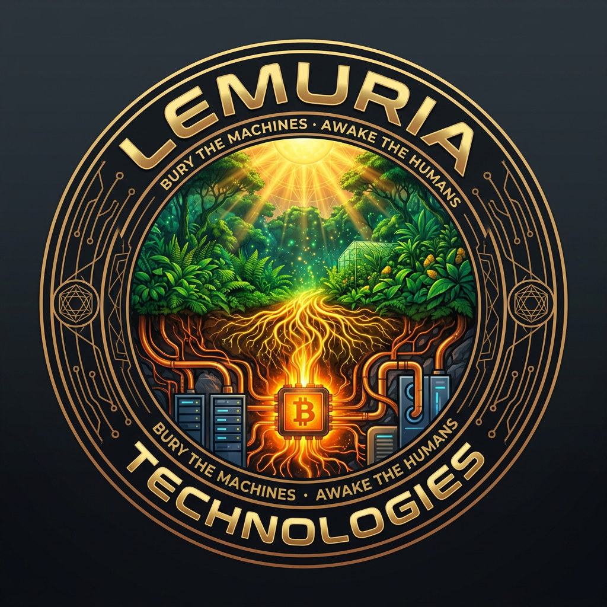
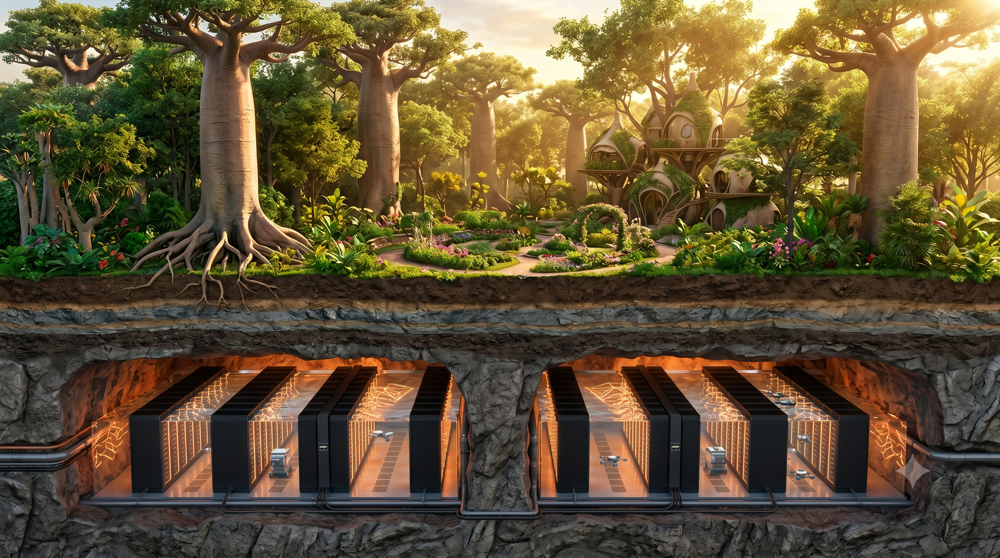
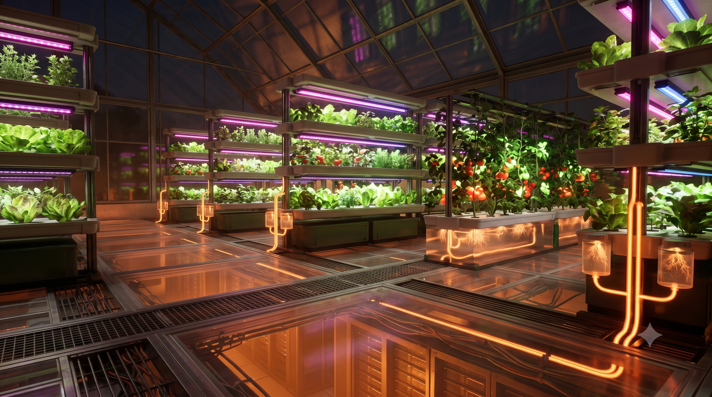
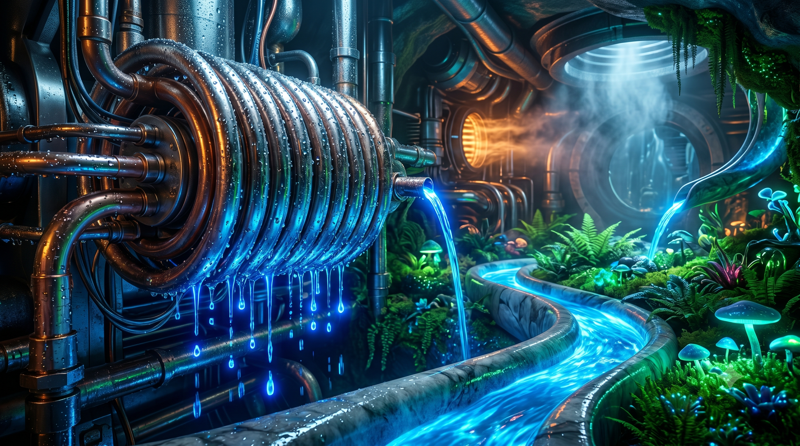
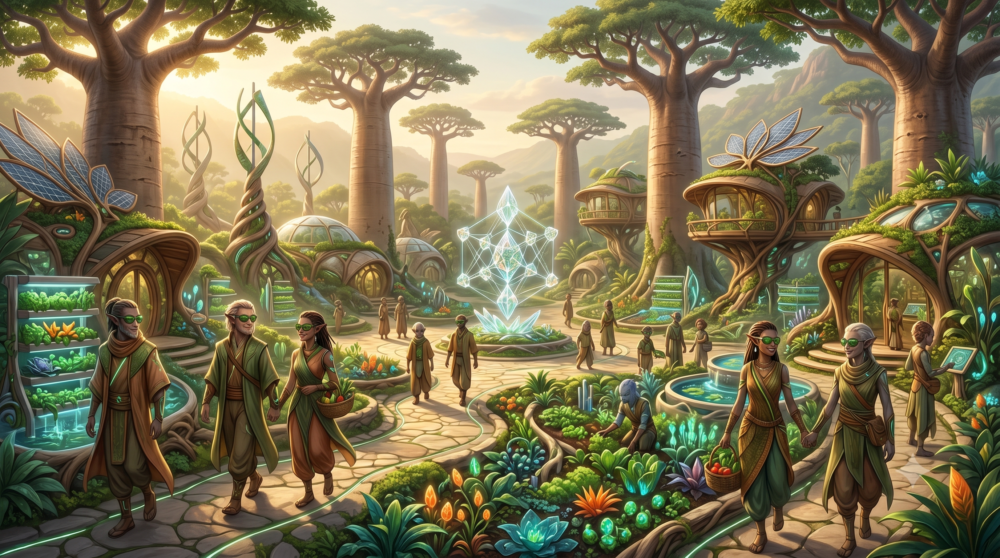
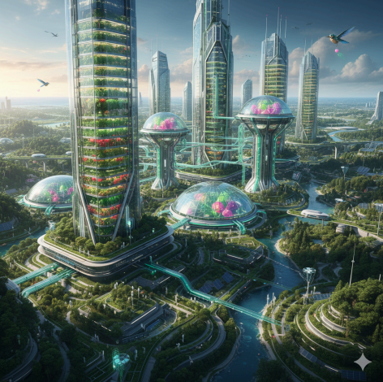
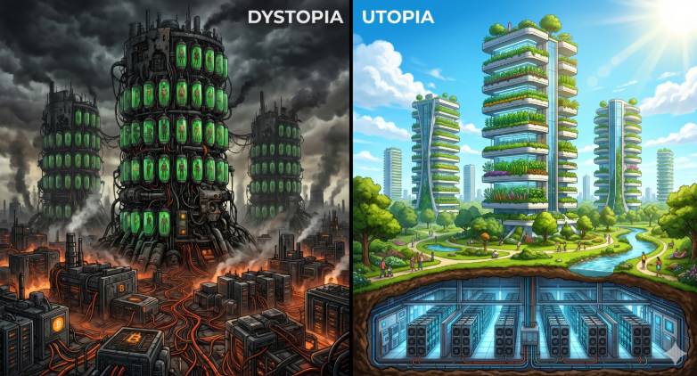
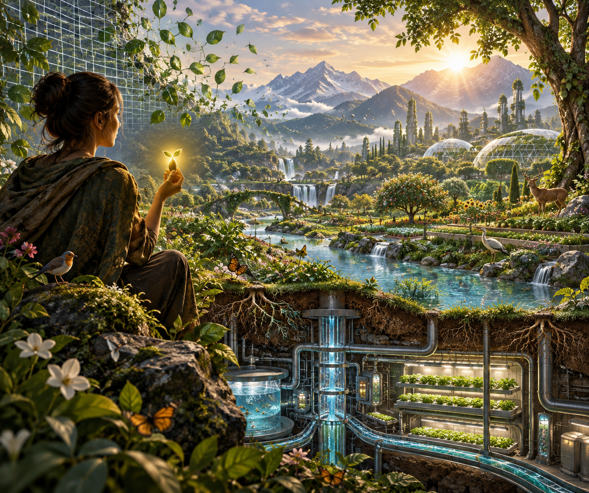

La Matrice Inversée The Inverted Matrix

2026-06-15 (last edit - October 31st, 2026) // UNE EXPLORATION D'ARCHITECTURE SYMBIOTIQUE SELON L'ÉTALON SOLAIRE 2026-06-15 (last edit - October 31st, 2026) // AN EXPLORATION OF SYMBIOTIC ARCHITECTURE UNDER THE SUN STANDARD
🧠 Poussez la recherche open-source plus loin ! Téléchargez le code source HTML de cet article pour le soumettre à votre IA favorite (Mistral, Gemini, Claude...) et continuez à explorer cette vision d'architecture symbiotique. Ne croyez pas, vérifiez l'information par vous-même.
🧠 Take this open-source research further! Download the raw HTML source of this article, plug it into your favorite AI (ChatGPT, Claude, Gemini...), and keep exploring this symbiotic architectural design. Don't Trust, Verify Information.
⚖️ Le Principe Fondateur : La Vérité Thermodynamique The Foundational Principle: Thermodynamic Truth
La vérité thermodynamique est une information qui ne peut être falsifiée par contrainte thermodynamique (et cryptographique). Elle protège la vérité observable par tous. Le réseau Bitcoin inverse ainsi la réalité monétaire en rendant le registre financier complètement public et transparent, tout en préservant la vie privée individuelle.
Par la preuve de travail et face à l'inflation du faux (milliers de normes, millions de followers, milliards d'unités de compte, billions de faux contenus synthétiques), le réseau nous réapprend à valoriser la rareté, la densité et la durée. En vérité, il vaut mieux privilégier la qualité à la quantité.
Thermodynamic truth is information that cannot be forged due to thermodynamic constraints. It protects a truth observable by all. The Bitcoin network thereby inverts monetary reality by making the financial ledger completely public and transparent, while preserving individual privacy.
Through proof-of-work and in the face of the inflation of the counterfeit (thousands of regulations, millions of followers, billions of units of account, trillions of fake synthetic contents), the network reteaches us to value scarcity, density, and duration. In truth, quality must take precedence over quantity.
🌱 Les Machines au service du Vivant - Architecture en Coupe : Le Flux Vivrier en Cycle Fermé Cross-Section Architecture: Closed-Loop Food Flux
Comment le minage informatique souterrain soutient la résilience biologique de surface. La symbiose recherchée ne consiste pas à convertir intégralement l'énergie du calcul en bénéfices biologiques : elle consiste à valoriser, lorsque cela est possible, une fraction de la chaleur et des flux associés, tout en imposant des seuils de réduction ou d'arrêt lorsque l'eau, les sols, la biodiversité ou les communautés locales sont sous pression. How subterranean computing supports surface biological resilience. The intended symbiosis does not claim to convert 100% of compute energy into biological output: rather, it recovers a realistic fraction of low-grade heat and associated mass flows where feasible, while enforcing strict curtailment or shutdown thresholds whenever local water, soils, biodiversity, or communities come under stress.
♨️ 1. Exergie & Chauffage Racinaire ♨️ 1. Exergy & Root-Zone Heating
L'eau glycolée à $70^\circ\text{C}$ des serveurs est détendue dans un échangeur pour tempérer le sol des serres ($22\text{–}25^\circ\text{C}$) en saison froide ou nocturne. Chauffer la rhizosphère plutôt que le volume d'air réduit fortement les déperditions convectives.
The $70^\circ\text{C}$ glycol loop from the servers is stepped down via a plate heat exchanger to warm greenhouse soil ($22\text{–}25^\circ\text{C}$) during cold or night cycles. Heating the rhizosphere rather than the air volume significantly reduces convective heat loss.
💧 2. Eau Condensée ($EC = 0$) 💧 2. Condensed Water ($EC = 0$)
Sous climat favorable (cible réaliste de $1\,500\text{ à }2\,500\text{ L/j/MW}$, plafond théorique à $4\,500\text{ L/j/MW}$), le cycle de sorption-condensation extrait une eau distillée pure. Cette eau ($EC = 0$) doit impérativement être reminéralisée avant l'irrigation ou l'aquaponie.
Under favorable psychrometric conditions ($1,500\text{–}2,500\text{ L/day/MW}$ realistic target; $4,500\text{ L/day/MW}$ theoretical ceiling), the sorption-condensation cycle yields pure distilled water ($EC = 0$), which must be remineralized and monitored before agricultural or aquaponic use.
🔥 3. Pré-séchage & Pyrolyse 🔥 3. Pre-drying & Pyrolysis
Les résidus ligneux et fanes sont pré-séchés à $65^\circ\text{C}$ par la chaleur fatale avant de subir une pyrolyse flash solaire à haute température ($450^\circ\text{C}$) en surface. Le Biochar obtenu améliore la rétention hydrique et la CEC des sols.
Woody residues and plant trimmings are pre-dried at $65^\circ\text{C}$ using waste heat prior to surface concentrated solar flash pyrolysis ($450^\circ\text{C}$). The resulting Biochar is incorporated into the soil to boost water retention and cation exchange capacity (CEC).
🥗 4. Potentiel Vivrier Pilote 🥗 4. Pilot Food Yield Targets
Pour un module de $1\text{ MW}_{\text{th}}$ couplé à $3\,600\text{–}4\,500\text{ m}^2$ de serres ($40\text{–}50\text{ kg/m}^2/\text{an}$), les cibles pilotes atteignent $\sim 180\text{ t/an}$ de maraîchage et $4\text{ à }20\text{ t/an}$ en aquaculture (selon le volume de bassins RAS). En été, lorsque le besoin des serres chute, l'excédent thermique doit impérativement être évacué vers un stockage saisonnier (ATES/BTES) ou un aéroréfrigérant sec de secours.
For a $1\text{ MW}_{\text{th}}$ module paired with $3,600\text{–}4,500\text{ m}^2$ of greenhouses ($40\text{–}50\text{ kg/m}^2/\text{yr}$), pilot targets reach $\sim 180\text{ t/yr}$ of produce and $4\text{–}20\text{ t/yr}$ in RAS aquaculture. During summer, when greenhouse heat demand drops, surplus heat must be routed to seasonal storage (ATES/BTES) or a backup dry cooler.
Principe ergonomique fondamental : les galeries profondes (Sion, étuves à $65\text{–}70\,^\circ\text{C}$, atmosphère inerte anti-incendie et bains hydrométallurgiques) sont des zones hostiles où les robots travaillent pour nous sous Terre, tandis que les opérateurs humains orchestrent la vie au grand air.
- 1. Ingénieur Énergéticien & Thermicien : supervise le bilan exergétique fermé ($1\,000\text{ kW/MW}$), les pertes de charge aérauliques ($\Delta P$), le PUE et l'effacement électrique réseau ultra-rapide (protocole Stratum CLR / couplage VRE).
- 2. Ingénieur Génie Civil, BTP & Géotechnique : assure la réhabilitation structurelle des cavités Brownfield, le soutènement rocheux, le cuvelage étanche des puits jumeaux (Dual-Shaft) et l'isolation sismo-acoustique (loi de Bornitz, $< 35\text{ dB(A)}$).
- 3. Informaticien, Architecte Système & Edge AI : administre les nœuds Bitcoin/Stratum, la sécurité cryptographique (Multisig DAO, signatures Nostr), les liaisons satellitaires LEO et les modèles d'inférence locale (Edge AI) qui asservissent le hachage aux besoins biologiques.
- 4. Ingénieur Maintenance Robotique & Automatisation Souterraine : pilote la flotte d'automates opérant 24h/24 dans le sanctuaire souterrain — portiques robotisés d'extraction des lames ASICs en cuves d'immersion, manipulateurs des bains de biolixiviation Ouroboros, convoyeurs de biomasse et essaim de drones hydriques NDVI.
- 5. Ingénieur Agronome & Aquaponiste (RAS) : orchestre la reminéralisation de l'eau distillée ($EC : 0 \rightarrow 1,2\text{ mS/cm}$), le chauffage racinaire ($22\text{–}25\,^\circ\text{C}$), la stœchiométrie Azote/Phosphore (N/P) des bassins et l'inoculation mycorhizienne du Biochar (Terra Preta).
- 6. Hydrogéologue & Ingénieur Environnement : contrôle l'équilibre hydraulique du doublet géothermique (ATES), surveille le panache thermique rocheux (modèle de Carslaw & Jaeger) et garantit le confinement zéro-fuite vis-à-vis des nappes phréatiques.
Core ergonomic principle: deep caverns (Zion, $65\text{–}70^\circ\text{C}$ thermal zones, inert-gas fire-suppression atmospheres, and hydrometallurgical vats) are machine-only sanctuaries where robots work for us underground, while human stewards orchestrate biological abundance in the open air.
- 1. Power & Thermal Systems Engineer: oversees the closed exergetic balance ($1,000\text{ kW/MW}$), aeraulic pressure drops ($\Delta P$), PUE, and millisecond grid load curtailment (Stratum CLR protocol / VRE stabilization).
- 2. Civil, Structural (BTP) & Geotechnical Engineer: leads Brownfield cavern rehabilitation, rock bolting and shotcrete support, waterproof dual-shaft lining, and seismo-acoustic attenuation (Bornitz law, $< 35\text{ dB(A)}$).
- 3. Computer Scientist, Systems Architect & Edge AI Lead: manages Bitcoin/Stratum nodes, cryptographic security (DAO Multisigs, Nostr telemetry signing), LEO satellite uplinks, and local Edge AI models slaving hash power to biological thresholds.
- 4. Robotics Maintenance & Subterranean Automation Engineer: commands the 24/7 autonomous robotic workforce inside the underground vault—gantry robots swapping immersed ASIC blades, robotic arms tending Ouroboros bio-leaching vats, biomass conveyors, and the surface NDVI drone swarm.
- 5. Agronomist & Aquaponics (RAS) Lead: directs distilled water remineralization ($EC: 0 \rightarrow 1.2\text{ mS/cm}$), root-zone heating ($22\text{–}25^\circ\text{C}$), N/P stoichiometric nutrient loops, and mycorrhizal Biochar (Terra Preta) soil regeneration.
- 6. Hydrogeologist & Environmental Safeguard Lead: monitors Aquifer Thermal Energy Storage (ATES) hydraulic balance, tracks bedrock thermal plumes (Carslaw & Jaeger model), and enforces zero-leakage groundwater protection.
Savons : les bilans d'énergie, la psychrométrie, les pertes de charge ($\Delta P$) et la faible conductivité rocheuse ($\kappa \approx 2,5\text{ W/m}\cdot\text{K}$) imposent des limites physiques strictes.
Supposons : la disponibilité d'une cavité saine (idéalement Brownfield), d'un doublet géothermique/ATES autorisé et d'une source électrique décarbonée.
Espérons : valoriser une fraction élevée de cette enthalpie basse température au service de l'eau et des sols, sans masquer les coûts auxiliaires, la saisonnalité ni les risques d'exploitation.
We Know: energy balances, psychrometrics, pressure drops ($\Delta P$), and low rock thermal conductivity ($\kappa \approx 2.5\text{ W/m}\cdot\text{K}$) enforce strict, verifiable physical limits.
We Assume: availability of a stable cavity (ideally Brownfield), a permitted aquifer/ATES loop, and a decarbonized power source.
We Hope: to valorize a significant fraction of low-grade waste heat for water and soil regeneration, without obscuring parasitic loads, seasonal saturation, or operational risks.
Niveau 1 : Topologie et Ingénierie Géotechnique de l'Enfouissement Level 1: Topology and Geotechnical Engineering of Burial
La première agression de l'ère de l'information est sensorielle : sonore et visuelle. Un centre de calcul de haute densité moderne génère une pollution acoustique mécanique assourdissante, dépassant fréquemment le seuil des 85 décibels (dB). En parallèle, ces architectures horizontales classiques stérilisent des dizaines d'hectares de terres arables sous d'immenses hangars de tôle dystopiques.
Pour faire taire la machine et restaurer l'intégrité de la biosphère, la première étape de la Matrice Inversée est topologique : l'effacement total sous la ligne d'horizon. Cependant, d'un point de vue de l'ingénierie dure, la roche n'est pas un puits thermique infini. Une matrice de calcul de 50 MW enfouie dans un grès dense ou du granite igné sans évacuation créera un emballement thermique catastrophique en quelques jours, la conductivité thermique de la roche étant extrêmement faible ($\kappa \approx 2.5 \text{ W/m}\cdot\text{K}$). L'enfouissement ne sert pas à dissiper la chaleur dans la roche, mais à utiliser l'impédance géologique colossale pour sanctuariser l'infrastructure (contre les éruptions solaires et les IEM) tout en isolant la surface des ondes sismiques générées par les turbines.
The first aggression of the information age is sensory: sonic and visual. A modern high-density data center generates deafening mechanical acoustic pollution, frequently exceeding the 85-decibel (dB) threshold. Simultaneously, these classic horizontal architectures sterilize dozens of acres of arable land beneath massive, dystopian metal hangars.
To silence the machine and restore the integrity of the biosphere, the first step of the Inverted Matrix is topological: total erasure below the horizon line. However, from a hard-engineering perspective, rock is not an infinite thermal sink. A 50 MW compute matrix buried in dense sandstone or igneous granite without extraction will create a catastrophic thermal runaway in a matter of days, as the thermal conductivity of rock is extremely low ($\kappa \approx 2.5 \text{ W/m}\cdot\text{K}$). Burial is not meant to dissipate heat into the rock, but to use the colossal geological impedance to sanctuary the infrastructure (against solar flares and EMPs) while insulating the surface from the seismic waves generated by the turbines.
- A. Le Piège des Guides d'Ondes (Acoustique) : Sous terre, le son ne se propage plus par voie aérienne, mais par ondes de compression (Ondes P) absorbées par la lithosphère. Le véritable défi acoustique provient des puits de ventilation verticaux qui agissent comme de gigantesques mégaphones. L'ingénierie impose des silencieux à baffles et un revêtement poreux spécifique dans les puits pour briser les fréquences de résonance du matériel de minage (généralement autour de 3000-6000 Hz) avant qu'elles n'atteignent la surface. A. The Waveguide Trap (Acoustics): Underground, sound no longer propagates through the air, but via compression waves (P-Waves) absorbed by the lithosphere. The true acoustic challenge comes from the vertical ventilation shafts acting as giant megaphones. Engineering dictates baffle silencers and specific porous linings within the shafts to break the resonant frequencies of the mining hardware (typically around 3000-6000 Hz) before they reach the surface.
- B. Le Bilan Émergétique de l'Excavation : Extraire de la roche dure nécessite une énergie massive. Dans un modèle biophysique sain, le CAPEX d'excavation est calculé en Émergie (Emjoules). La géométrie des cavernes doit minimiser le volume excavé tout en maximisant la dynamique des fluides. L'utilisation d'anciennes mines préexistantes permet de contourner cette dette énergétique initiale. B. The Emergy Balance of Excavation: Extracting hard rock requires massive energy. In a sound biophysical model, the excavation CAPEX is calculated in Emergy (Emjoules). The cavern geometry must minimize excavated volume while maximizing fluid dynamics. Utilizing pre-existing abandoned mines bypasses this initial energetic debt entirely.
Sous terre, le son ne suit plus la loi de masse des parois aériennes. L'amplitude vibratoire $A(r)$ perçue en surface chute de manière drastique grâce à deux facteurs combinés : la divergence géométrique des ondes P et S (le terme $(r_0/r)^n$), et surtout l'amortissement hystérétique de la roche (le facteur $e^{-\alpha r}$). Le coefficient d'absorption $\alpha$ dépend de la fréquence $f$ des serveurs, du coefficient de perte du matériau $\eta$ (ex: latérite vs granite) et de la vitesse de l'onde $c_s$. Un enfouissement correctement dimensionné peut réduire la transmission sonore et vibratoire vers la surface ; le niveau résiduel doit être mesuré en conditions réelles, notamment au niveau des puits, ventilateurs, pompes et équipements de secours. Underground, sound no longer follows the mass law of airborne walls. The vibratory amplitude $A(r)$ perceived at the surface drops drastically due to two combined factors: the geometric divergence of P and S waves (the $(r_0/r)^n$ term), and crucially, the hysteretic damping of the rock (the $e^{-\alpha r}$ factor). The absorption coefficient $\alpha$ depends on the servers' frequency $f$, the material's loss factor $\eta$ (e.g., laterite vs granite), and the wave speed $c_s$. A properly engineered burial drastically reduces acoustic and vibratory transmission to the surface (targeting under $35\text{ dB(A)}$ at $50\text{ m}$), though residual noise must be measured in situ at ventilation shafts, fans, pumps, and backup equipment.

⛰️ Phase 1 : L'Approche "Brownfield" ⛰️ Phase 1: The "Brownfield" Approach
Avant de forer, guérissons les cicatrices. La réhabilitation d'infrastructures désaffectées (anciennes mines de sel ou de fer, tunnels, bunkers) est la priorité absolue. L'utilisation de galeries préexistantes annule la dette émergétique et le CAPEX d'excavation initial, offrant un retour sur investissement rapide et transformant les friches industrielles en moteurs de régénération.
Before drilling, let's heal the scars. Rehabilitating decommissioned infrastructure (abandoned salt or iron mines, tunnels, bunkers) is the absolute priority. Utilizing pre-existing galleries zeroes out the emergy debt and initial excavation CAPEX, offering rapid ROI and turning industrial wastelands into engines of regeneration.
🌊 Exutoires Géothermiques Actifs (ATES & BTES) 🌊 Active Geothermal Heat Sinks (ATES & BTES)
La roche sèche étant un isolant thermique, l'enfouissement ne dispense jamais d'un système actif de rejet de chaleur. L'ingénierie distingue deux solutions : le doublet sur aquifère en boucle ouverte (ATES — Aquifer Thermal Energy Storage, soumis à permis hydrogéologique) et les champs de sondes géothermiques en boucle fermée (BTES — Borehole Thermal Energy Storage), doublés d'aéroréfrigérants secs de secours (Dry Coolers) lorsque les serres n'absorbent pas la chaleur en été.
Because dry bedrock is a thermal insulator, burial never replaces an active heat-rejection system. Engineering strictly distinguishes between open-loop aquifer doublets (ATES — Aquifer Thermal Energy Storage, requiring hydrogeological permits) and closed-loop borehole arrays (BTES — Borehole Thermal Energy Storage), backed by surface Dry Coolers whenever summer greenhouse heat demand drops.
🛡️ Sécurité & Confinement Actif en Immersion 🛡️ Safety & Active Confinement in Immersion
Immerger des batteries haute densité dans un fluide diélectrique sous terre impose des normes strictes (gestion de pression, emballement thermique). L'infrastructure intègre un confinement passif modulaire, des systèmes d'extinction automatiques par gaz inerte, et une sanctuarisation militaire (anti-IEM) protégeant le registre numérique tout en rassurant les exploitants industriels.
Immersing high-density batteries in dielectric fluid underground imposes strict standards (pressure management, thermal runaway). The infrastructure integrates modular passive confinement, automatic inert gas fire suppression systems, and military-grade (anti-EMP) sanctuary, protecting the digital ledger while reassuring industrial operators.
⬡ Le Forage Profond (Din) ⬡ Deep Drilling (Din)
L'approche Tabula Rasa conçue pour les supercalculateurs de classe gigawatt en zone vierge. Des puits verticaux sont forés directement dans le socle rocheux igné ou stratifié dense. L'intégration de la variable $H_{opt}$ garantit que la profondeur minimise le volume excavé tout en offrant une isolation sismique suprême. La surface, vierge de tout béton, est strictement sanctuarisée pour la reforestation de climax.
The Tabula Rasa approach designed for gigawatt-class supercomputers in virgin zones. Vertical shafts are drilled directly into the igneous or dense stratified bedrock. The integration of the $H_{opt}$ variable ensures the depth minimizes excavated volume while offering supreme seismic isolation. The surface, void of any concrete, is strictly sanctified for climax reforestation.
🏢 La Symbiose Urbaine 🏢 Urban Symbiosis
La colonisation intelligente des infrastructures souterraines sous-utilisées (niveaux inférieurs de parkings désertés, anciennes stations de métro). Les mètres d'épaisseur de béton armé agissent comme des bunkers acoustiques. L'avantage d'ingénierie réside dans la proximité immédiate avec les réseaux de chaleur urbains, permettant de chauffer des quartiers entiers avec une déperdition de transport exergétique quasi nulle.
The intelligent colonization of underutilized underground infrastructures (deserted lower parking levels, abandoned subway stations). Meters of reinforced concrete act as acoustic bunkers. The engineering advantage lies in the immediate proximity to urban district heating networks, making it possible to heat entire neighborhoods with near-zero exergetic transport loss.
🚜 Le Micro-Pod Artisanal 🚜 Artisanal Micro-Pod
L'alliance de la pelleteuse et du Cypherpunk. À l'échelle de l'individu, un caisson d'immersion étanche (certifié IP68) est enfoui dans la zone hors-gel (environ -2 à -3 mètres) d'un terrain privé, surmonté d'une serre aquaponique. Ce modèle garantit une décentralisation extrême de la puissance de calcul tout en offrant à la famille une souveraineté énergétique locale.
The alliance of the excavator and the Cypherpunk. At the individual scale, a waterproof immersion pod (IP68 certified) is buried in the frost-free zone (about -2 to -3 meters) of a private plot, topped by an aquaponic greenhouse. This model guarantees extreme decentralization of compute power while offering the family local energy sovereignty.
⛰️ Les Cicatrices Oubliées ⛰️ Forgotten Scars
La remédiation écologique par la reconversion d'anciennes mines de charbon ou de métaux abandonnées. Les réseaux de galeries préexistants annihilent le CAPEX de forage initial et contournent l'équation de la dette en émergie. Cette topologie permet de transformer des désastres écologiques hérités de l'ère industrielle en moteurs de régénération vitale.
Ecological remediation through the repurposing of abandoned coal or metal mines. Pre-existing gallery networks annihilate the initial drilling CAPEX and bypass the emergy debt equation. This topology allows the transformation of ecological disasters inherited from the industrial era into engines of vital regeneration.
🛡️ Le Sanctuaire Militaire 🛡️ Military Sanctuary
Transformer les vestiges de la paranoïa géopolitique en sanctuaires pour la vie. La réquisition de silos de missiles et de bunkers de la Guerre Froide offre des dalles de béton colossales et un blindage géologique anti-IEM (Impulsion Électromagnétique). Une protection de niveau militaire dédiée non plus à la destruction mutuelle, mais à la sécurisation du registre décentralisé et de la biosphère sus-jacente.
Transforming the remnants of geopolitical paranoia into sanctuaries for life. Requisitioning decommissioned missile silos and Cold War bunkers provides colossal concrete slabs and geological EMP (Electromagnetic Pulse) shielding. Military-grade protection dedicated no longer to mutual destruction, but to securing the decentralized ledger and the overlying biosphere.
Niveau 2 : La Symbiose Thermique (Gestion & Flux Énergétiques) Level 2: Thermal Symbiosis (Energy Management & Flows)
Une fois la machine isolée acoustiquement dans les profondeurs, l'ingénierie doit faire face au second principe de la thermodynamique : la dissipation inévitable de chaleur. Dans le modèle de la Matrice Inversée, cette énergie thermique n'est plus traitée comme une nuisance à évacuer, mais comme une ressource de haute qualité. Le Vecteur Thermique est le lien ombilical qui connecte la puissance de calcul à la puissance biologique :
Once the machine is acoustically isolated in the depths, engineering must face the second law of thermodynamics: the inevitable dissipation of heat. In the Inverted Matrix model, this thermal energy is no longer treated as a nuisance to be evacuated, but as a high-quality resource. The Thermal Vector is the umbilical cord that connects computational power to biological power:
- A. La Captation par Immersion (Le Coeur) : Pour maximiser l'exergie, les serveurs sont immergés dans un fluide diélectrique. Ce liquide capture 95% de la chaleur fatale à des températures constantes (50°C-75°C), optimisant le transfert énergétique. A. Immersion Capture (The Core): To maximize exergy, servers are immersed in a dielectric fluid. This liquid captures 95% of the waste heat at constant temperatures (50°C-75°C), optimizing energy transfer.
- B. La Convection Hybride de Sion (Le Flux) : L'infrastructure utilise un effet cheminée massif, assisté par des turbines d'extraction à haute efficience (alimentées par les ASICs) pour vaincre les pertes de charge de la paroi rocheuse. L'énergie monte en suivant les lois de la convection thermodynamique. B. Zion's Hybrid Convection (The Flow): The infrastructure uses a massive chimney effect, assisted by high-efficiency extraction turbines (powered by ASICs) to overcome pressure drops from the rock walls. Energy rises following the laws of thermodynamic convection.
- C. Le Chauffage Racinaire (La Vie) : À la surface, la chaleur passe par un échangeur abaisseur pour éviter le choc exergétique, puis est distribuée dans le réseau mycorhizien (22-25°C). Chauffer les racines accélère le métabolisme végétal, assurant des récoltes abondantes. C. Root Heating (Life): On the surface, heat passes through a step-down exchanger to prevent exergetic shock, then is distributed into the mycorrhizal network (22-25°C). Heating the roots accelerates plant metabolism, ensuring abundant harvests.

♨️ Captation Exergétique ♨️ Exergetic Capture
L'utilisation de fluides caloporteurs permet de maintenir une chaleur constante et exploitable.
The use of heat transfer fluids maintains constant and exploitable heat.
⇈ L'Effet Cheminée ⇈ Chimney Effect
Le design vertical facilite la remontée passive de l'air chaud vers la surface.
The vertical design facilitates the passive rise of hot air to the surface.
🌿 Accélération Métabolique 🌿 Metabolic Acceleration
Le chauffage racinaire permet une production de nourriture bio continue et souveraine.
Root heating allows for continuous and sovereign organic food production.
Avec un fluide caloporteur à $T_{\text{fluide}} = 343\text{ K}$ ($70^\circ\text{C}$) et un milieu ambiant à $T_{\text{ambiant}} = 288\text{ K}$ ($15^\circ\text{C}$), le facteur de Carnot plafonne à $\eta_{\text{Carnot}} \approx 16\,\%$. Toute reconversion thermodynamique en électricité (cycle ORC) gaspillerait plus de $88\,\%$ de l'enthalpie. À l'inverse, le couplage thermique direct (chauffage racinaire, désorption MOF et pré-séchage) valorise près de $85\,\%$ de l'enthalpie totale. With a coolant temperature of $T_{\text{fluid}} = 343\text{ K}$ ($70^\circ\text{C}$) and an ambient sink at $T_{\text{ambient}} = 288\text{ K}$ ($15^\circ\text{C}$), the Carnot factor caps at $\eta_{\text{Carnot}} \approx 16\%$. Attempting to reconvert this low-grade heat into electricity (via an ORC turbine) would waste over $88\%$ of the enthalpy. Conversely, direct thermal cascading (root heating, MOF desorption, and biomass drying) recovers up to $85\%$ of total enthalpy.
⚡ Entropie & Paradoxe de Jevons ⚡ Entropy & Jevons Paradox
$\dot{S}_{\text{interne}} + \dot{S}_{\text{calcul}} \le \dot{S}_{\text{export}}$. Tout mégawatt de calcul doit être compensé par la cogénération physique et la dissipation utile, sous peine de surchauffe métabolique de la biosphère. $\dot{S}_{\text{internal}} + \dot{S}_{\text{compute}} \le \dot{S}_{\text{export}}$. Every compute megawatt must be balanced by physical cogeneration and useful dissipation to prevent metabolic overheating of the biosphere.
⚖️ Réponse à l'Objection de l'Économie Biophysique (Déconstruire le Mythe du « Gaspillage ») Addressing the Biophysical Economics Objection (Debunking the "Waste" Myth)
Les critiques issus de l'économie biophysique et de la déconstruction des mythes néoclassiques (dans la lignée de Soddy [26], Georgescu-Roegen, Daly [27], Odum [5] ou des analyses contemporaines de type Debunk'onomy) rappellent à juste titre que le « cloud » immatériel n'existe pas : toute activité numérique est un sous-système physique soumis à l'entropie, et dissiper des gigawatts dans des hangars de surface ventilés à perte constitue une aberration thermodynamique et foncière.
La Matrice Inversée valide intégralement ce diagnostic physique, mais en résout l'équation par la cogénération exergétique : selon le premier principe de la thermodynamique, un processeur ASIC ou GPU est un radiateur électrique à rendement de conversion de $100\,\%$ ($1\text{ MW}_{\text{e}} \equiv 1\text{ MW}_{\text{th}}$ d'effet Joule). Dès lors que cette enthalpie basse température ($65\text{–}75\,^\circ\text{C}$) ne s'échappe plus dans l'atmosphère mais se substitue à des chaudières fossiles pour régénérer des sorbants hydriques (MOF-303), pré-sécher la biomasse (Biochar) et chauffer les serres en hiver — tout en agissant comme une charge interruptible à la milliseconde (Stratum CLR) qui stabilise les réseaux renouvelables intermittents [16, 18] —, le calcul cesse d'être un consommateur final stérile. Il devient une infrastructure de chauffage, de dessiccation et d'équilibrage réseau autofinancée par la preuve de travail.
Critics from the biophysical economics tradition (following Soddy [26], Georgescu-Roegen, Daly [27], Odum [5], and contemporary physical-flow analyses such as Debunk'onomy) rightly point out that the "immaterial cloud" is a delusion: all digital activity is a physical subsystem bound by entropy, and venting gigawatts of heat into the atmosphere from sprawling surface hangars is a thermodynamic and land-use aberration.
The Inverted Matrix fully endorses this physical diagnosis, while resolving the equation through exergetic cogeneration: by the First Law of Thermodynamics, an ASIC or GPU processor is a $100\%$ efficient electric resistive heater ($1\text{ MW}_{\text{e}} \equiv 1\text{ MW}_{\text{th}}$ of Joule heat). When this low-grade enthalpy ($65\text{–}75^\circ\text{C}$) is no longer wasted into ambient air but instead displaces fossil boilers to regenerate atmospheric water sorbents (MOF-303), pre-dry biomass (Biochar), and warm greenhouse root zones—while simultaneously operating as a millisecond-interruptible load (Stratum CLR) that balances intermittent renewable grids [16, 18]—computation ceases to be a sterile end-consumer. It becomes a self-funded thermal utility, water-harvesting driver, and grid-stabilization asset.
Niveau 3 : Le Puits Atmosphérique (Thermodynamique, Psychrométrie & Dessiccation) Level 3: Atmospheric Well (Thermodynamics, Psychrometrics & Desiccation)
Le Puits Atmosphérique représente le point de rupture ontologique où la pure théorie de l'information s'incarne dans la matière biologique. L'atmosphère terrestre agit comme un réservoir thermique et hydrique colossal, abritant en permanence un océan invisible estimé à plus de 12 900 kilomètres cubes de vapeur d'eau douce en suspension. Cependant, extraire cette ressource de manière passive dans un environnement aride ou semi-aride se heurte à un mur physique inviolable imposé par le premier et le second principe de la thermodynamique : la chaleur latente de changement de phase ($\Delta H_{vap} \approx 2257 \text{ kJ/kg}$).
Dans un système de condensation classique, le passage de l'état gazeux à l'état liquide libère une quantité massive d'énergie thermique directement accumulée par les surfaces d'échange. La conductivité thermique de la roche environnante étant extrêmement faible ($\kappa_{roche} \approx 2.0 \text{ W/m}\cdot\text{K}$), toute tentative de condensation passive sature thermiquement les parois de la cavité en quelques heures. Le gradient thermique s'effondre, la température interne augmente jusqu'à dépasser le point de rosée local, et le puits se transforme en un hammam stérile où le processus de précipitation s'arrête net.
Pour contourner cette barrière cinétique, la Matrice Inversée rejette le paradigme du refroidissement brut et déploie un cycle à trois temps fondé sur la psychrométrie de l'air, l'asservissement du flux exergétique des ASICs, et la séparation mécanique des phases d'adsorption et de condensation. En couplant la dynamique des fluides souterrains à la géométrie moléculaire des aluminosilicates, l'infrastructure résout l'équation de la sécheresse, transmutant chaque Terahash calculé en une source d'eau distillée pure, exempte de polluants, prête à alimenter la biomasse de surface et à briser définitivement les cycles climatiques mortifères.
The Atmospheric Well represents the ontological breaking point where pure information theory materializes into biological matter. The Earth's atmosphere acts as a colossal thermal and hydric reservoir, permanently sheltering an invisible ocean estimated at over 12,900 cubic kilometers of suspended fresh water vapor. However, extracting this resource passively in an arid or semi-arid environment hits an inviolable physical wall imposed by the first and second laws of thermodynamics: the latent heat of phase change ($\Delta H_{vap} \approx 2257 \text{ kJ/kg}$).
In a classical condensation system, the transition from gaseous to liquid state releases a massive amount of thermal energy directly accumulated by the exchange surfaces. Since the thermal conductivity of the surrounding rock is extremely low ($\kappa_{rock} \approx 2.0 \text{ W/m}\cdot\text{K}$), any attempt at passive condensation thermally saturates the cavity walls within hours. The thermal gradient collapses, the internal temperature rises until it exceeds the local dew point, and the well transforms into a sterile steam room where the precipitation process stops instantly.
To bypass this kinetic barrier, the Inverted Matrix rejects the paradigm of raw cooling and deploys a three-stage cycle based on air psychrometrics, the slaving of the ASICs' exergetic flux, and the mechanical separation of adsorption and condensation phases. By coupling underground fluid dynamics with the molecular geometry of aluminosilicates, the infrastructure solves the equation of drought, transmuting every calculated Terahash into a source of pure distilled water, free of pollutants, ready to feed the surface biomass and permanently break deadly climate cycles.
- A. Topologie en U & Gravité Thermique : L'air froid ne peut pas chuter dans un puits où l'air chaud tente de monter (bouchon thermique). L'architecture exige des puits jumeaux (Dual-Shaft). L'air nocturne, dont la contraction thermique compense la légèreté molaire de sa vapeur d'eau, chute par gravité dans le puits d'admission (Intake). Il gave naturellement la matrice MOF au fond, tandis que l'air chaud est expulsé par le puits d'échappement (Exhaust). A. U-Tube Topology & Thermal Gravity: Cold air cannot fall down a shaft where hot air is trying to rise (thermal plugging). The architecture mandates twin shafts (Dual-Shaft). The night air, whose thermal contraction offsets the molar lightness of its water vapor, falls by gravity into the intake shaft. It naturally gorges the MOF matrix at the bottom, while the hot air is expelled through the exhaust shaft.
- B. Séparation de Phase par Matrice MOF : L'air ambiant aspiré traverse une matrice rotative saturée de MOFs (Metal-Organic Frameworks, ex: MOF-303) ou de zéolithes SAPO-34, spécialement choisis pour leur basse température de désorption. Les pores nanométriques capturent l'eau. La roue bascule ensuite dans le flux d'air chaud (65°C-80°C) des ASICs. Cette énergie thermique de bas grade force la désorption, créant un micro-flux secondaire ultra-saturé. B. Phase Separation via MOF Matrix: The drawn ambient air passes through a rotary matrix saturated with hydrophilic MOFs (e.g., MOF-303 or SAPO-34 zeolite), specifically chosen for their low desorption temperature. Nanometric pores capture the water. The wheel then rotates into the hot airflow (65°C-80°C) from the ASICs. This low-grade thermal energy forces desorption, creating an ultra-saturated secondary micro-flux.
- C. Précipitation Isolée sous Point de Rosée : Ce flux secondaire d'air saturé est canalisé vers un condenseur géothermique. Pour éviter la saturation thermique de la roche face aux mégawatts de chaleur latente libérée ($\Delta H_{vap}$), ce condenseur doit être obligatoirement couplé à un flux d'aquifère actif souterrain, ou à une pompe à chaleur (PAC) de dissipation dynamique renvoyant l'énergie en surface. La vapeur s'effondre en eau distillée pure. C. Isolated Precipitation Below Dew Point: This secondary saturated airflow is channeled to a geothermal condenser. To prevent the thermal saturation of the rock from the megawatts of released latent heat ($\Delta H_{vap}$), this condenser must be coupled with an active underground aquifer flow, or a dynamic dissipation heat pump (HP) returning the energy to the surface. The vapor collapses into pure distilled water.

🌪️ Tirage Convectif Assisté Assisted Convective Draft
Exploitation de la poussée d'Archimède thermique ($\Delta p \approx 60\text{ Pa}$ pour $50\text{ m}$). Ce tirage naturel assiste les ventilateurs axiaux basse consommation nécessaires pour vaincre les pertes de charge des filtres et des roues MOF.
Exploitation of thermal buoyancy ($\Delta p \approx 60\text{ Pa}$ per $50\text{ m}$). This natural draft assists the low-power axial fans required to overcome pressure drops across air filters, condensers, and MOF wheels.
🧽 Cinétique de Dessiccation Desiccation Kinetics
Utilisation de matrices microporeuses (MOF-303 / zéolithe SAPO-34). L'adsorption reste active dès $15\text{–}20\%$ d'humidité relative, mais exige un débit massique d'air accru en milieu aride conformément au bilan psychrométrique.
Utilization of microporous frameworks (MOF-303 / SAPO-34 zeolite). Vapor capture remains active down to $15\text{–}20\%$ relative humidity, though arid conditions require higher air mass flow rates in accordance with psychrometric limits.
🌱 Reminéralisation Contrôlée Controlled Remineralization
L'eau condensée présente une conductivité quasi nulle ($EC \approx 0$). Elle évite tout entartrage des échangeurs primaires, puis est reminéralisée ($\text{Ca}^{2+}, \text{Mg}^{2+}$) et équilibrée en pH avant d'irriguer la rhizosphère.
Condensed water exhibits near-zero electrical conductivity ($EC \approx 0$). It prevents scaling inside primary heat exchangers and is subsequently remineralized ($\text{Ca}^{2+}, \text{Mg}^{2+}$) and pH-balanced prior to root-zone irrigation.
La pression motrice $\Delta P$ (Pa) disponible pour vaincre les pertes de charge est une fonction linéaire directe de la profondeur totale du puits verticaux $H$ (m) et du différentiel de température absolue entre l'atmosphère de surface $T_{ext}$ (K) et l'air réchauffé par le dôme de calcul $T_{int}$ (K). Plus la cavité est profonde et plus le silicium dissipe d'énergie, plus le débit d'air auto-généré s'accélère. The driving pressure $\Delta P$ (Pa) available to overcome pressure drops is a direct linear function of the total vertical shaft depth $H$ (m) and the absolute temperature differential between the surface atmosphere $T_{ext}$ (K) and the air heated by the compute dome $T_{int}$ (K). The deeper the cavity and the more energy the silicon dissipates, the faster the self-generated airflow accelerates.
La vitesse de l'air $v$ (m/s) au sein de la galerie est sévèrement limitée par le facteur de friction $f$. L'architecture impose un diamètre de puits $D$ mathématiquement indexé sur le profil psychrométrique du biome : plus l'humidité absolue locale est faible (ex: zones arides à 5g d'eau/kg d'air), plus la masse d'air requise $\dot{m}_{air}$ explose, exigeant un diamètre gigantesque pour éviter l'étranglement aérodynamique (minimisant $\sum K$). The air velocity $v$ (m/s) within the gallery is severely limited by the friction factor $f$. The architecture dictates a shaft diameter $D$ mathematically indexed to the biome's psychrometric profile: the lower the local absolute humidity (e.g., arid zones at 5g water/kg air), the more the required air mass $\dot{m}_{air}$ explodes, demanding a gigantic diameter to avoid aerodynamic throttling (minimizing $\sum K$).
Le débit d'eau liquide extrait $\dot{m}_{w}$ (kg/s) dépend de l'écart d'humidité absolue $x$ entre l'entrée du dessiccateur et la sortie du condenseur géothermique. L'humidité absolue est régie par la pression de vapeur saturante $p_{sat}(T)$, calculée selon la loi de Clausius-Clapeyron. La roue de zéolithe artificielle agit en déplaçant artificiellement l'humidité relative $\varphi$ à l'intérieur du flux secondaire, forçant la précipitation moléculaire là où les systèmes de climatisation classiques s'égarent. The extracted liquid water flow rate $\dot{m}_{w}$ (kg/s) depends on the absolute humidity gap $x$ between the desiccant inlet and the geothermal condenser outlet. Absolute humidity is governed by the saturation vapor pressure $p_{sat}(T)$, calculated according to the Clausius-Clapeyron relation. The artificial zeolite wheel operates by artificially shifting the relative humidity $\varphi$ inside the secondary loop, forcing molecular precipitation where classical HVAC systems fail.
Cette équation d'état dresse le bilan de l'énergie thermique totale $\dot{Q}_{cond}$ (W) libérée lors de la liquéfaction. La dissipation massive de la chaleur latente $\Delta H_{vap}$ est immédiatement interceptée par des échangeurs à plaques haute efficacité reliés aux circuits de chauffage racinaire du Niveau 2. Le "déchet" thermodynamique du Puits Atmosphérique est ainsi recyclé pour doper le métabolisme des cultures de surface, scellant le pacte symbiotique entre le silicium informatique et le vivant. This state equation charts the total thermal energy $\dot{Q}_{cond}$ (W) released during liquefaction. The massive dissipation of latent heat $\Delta H_{vap}$ is immediately intercepted by high-efficiency plate heat exchangers linked to the root heating networks of Level 2. The thermodynamic "waste" of the Atmospheric Well is thus recycled to boost surface crop metabolism, sealing the symbiotic pact between computer silicon and life.
Le Puits Atmosphérique repose sur un cristal microporeux : des MOFs (Metal-Organic Frameworks) ou du Zéolithe (type SAPO-34). Ces matériaux agissent comme un piège moléculaire parfait pour l'eau, et se régénèrent parfaitement avec une chaleur de bas grade ($60^\circ\text{C} - 80^\circ\text{C}$). Cependant, concevoir une roue dessiccante industrielle capable d'absorber la chaleur de 10 à 50 MW d'ASICs exige une ingénierie spatiale.
The Atmospheric Well relies on a microporous crystal: MOFs (Metal-Organic Frameworks) or Zeolite (type SAPO-34). These materials act as a perfect molecular trap for water, regenerating perfectly with low-grade heat ($60^\circ\text{C} - 80^\circ\text{C}$). However, designing an industrial desiccant wheel capable of absorbing the heat of 10 to 50 MW of ASICs requires space-grade engineering.
💎 Composition MatérielleMaterial Composition
- Matrice : Structure en nid d'abeille (Honeycomb) enduite de cristaux dopés au Graphène pour maximiser la conductivité thermique.Matrix: Honeycomb structure coated with Graphene-doped crystals to maximize thermal conductivity.
- Châssis : Acier Inoxydable qualité marine (316L).Frame: Marine-grade Stainless Steel (316L).
📐 Aérodynamique & Angle (32.5°)Aerodynamics & Angle (32.5°)
Contrairement aux roues HVAC classiques, les matrices de Sion sont inclinées à un angle optimal de 32.5° par rapport au flux convectif ascendant. Unlike classic HVAC wheels, Zion's matrices are tilted at an optimal angle of 32.5° relative to the ascending convective updraft.
Constat : Construire une roue unique de 20 mètres s'effondrerait sous son poids. La solution est la Matrice Fractale : des Cassettes Hexagonales de 3m gérant chacune ~2.5 MW, arrangées en essaim et activables individuellement par l'IA. Fact: Building a single 20-meter wheel would collapse under its weight. The solution is the Fractal Array: 3m Hexagonal Cassettes handling ~2.5 MW each, arrayed in a swarm and toggled by AI.
Niveau 4 : L'Alchimie du Carbone (Hybridation & Biochar) Level 4: Carbon Alchemy (Hybridization & Biochar)
Le métabolisme macro-économique de la Matrice Inversée trouve son ancrage biophysique le plus profond dans l'Alchimie du Carbone. Pour régénérer durablement les sols dégradés, il faut recréer une matrice organo-minérale inspirée de la Terra Preta. Comme la température maximale du fluide caloporteur issu des serveurs est bornée entre $65^\circ\text{C}$ et $85^\circ\text{C}$ (limitée par le packaging, les condensateurs et les interfaces thermiques), alors que la pyrolyse de la biomasse exige entre $350^\circ\text{C}$ et $700^\circ\text{C}$, l'infrastructure déploie une ingénierie thermique hybride en cascade :
The macroeconomic metabolism of the Inverted Matrix finds its deepest biophysical anchor in Carbon Alchemy. To sustainably regenerate degraded soils, we must rebuild an organo-mineral matrix inspired by Terra Preta. Because the coolant exiting the servers is thermally bounded between $65^\circ\text{C}$ and $85^\circ\text{C}$ (constrained by packaging, capacitors, and TIMs rather than the silicon die alone), whereas biomass pyrolysis requires between $350^\circ\text{C}$ and $700^\circ\text{C}$, the infrastructure deploys cascaded hybrid thermal engineering:
- A. Bifurcation Exergétique & Pré-séchage : Le fluide diélectrique bouillant des ASICs est divisé en deux circuits. Pendant que le premier désorbe l'eau du MOF (Niveau 3), le second traverse un échangeur radiatif sec. Ce flux d'air chaud et sec ($65^\circ\text{C}$) accomplit la tâche la plus lourde : évaporer l'eau intracellulaire de la biomasse fraîche dans des tunnels de séchage souterrains continus, économisant 70% de la facture énergétique d'une pyrolyse standard. A. Exergetic Bifurcation & Pre-drying: The boiling dielectric fluid from the ASICs is split into two circuits. While the first desorbs water from the MOF (Level 3), the second passes through a dry radiative heat exchanger. This hot, dry airflow ($65^\circ\text{C}$) accomplishes the heaviest task: evaporating intracellular water from fresh biomass in continuous underground drying tunnels, saving 70% of a standard pyrolysis energy bill.
- B. Pyrolyse Flash Solaire Concentrée : La biomasse séchée par les serveurs remonte à la surface via un tapis roulant pour subir une pyrolyse flash à $450^\circ\text{C}$ directement sous des concentrateurs solaires paraboliques à l'air libre. Éviter la transmission de cette chaleur extrême sous terre prévient la fonte des infrastructures informatiques. Le carbone se cristallise en Biochar inerte. B. Concentrated Solar Flash Pyrolysis: The server-dried biomass is brought back to the surface via a conveyor to undergo a $450^\circ\text{C}$ flash pyrolysis directly under open-air parabolic solar concentrators. Avoiding the transmission of this extreme heat underground prevents IT infrastructure melting. The carbon crystallizes into inert Biochar.
- C. Activation Mycorhizienne : Ce charbon pur poreux (Biochar) est trempé dans les effluents d'aquaponie puis enfoui. Il démultiplie la capacité d'échange cationique (CEC) et retient l'eau du Niveau 3. C. Mycorrhizal Activation: This pure porous charcoal (Biochar) is soaked in aquaponic effluents then buried. It multiplies the soil's cation exchange capacity (CEC) and retains water from Level 3.
🔥 Le Séchoir Souterrain 🔥 Subterranean Dryer
La chaleur informatique rompt les ponts hydro-structurels avant la cuisson finale.
Compute heat breaks hydro-structural bonds prior to the final baking process.
⬢ Séquestration Durable ⬢ Long-term Sequestration
Le carbone solide reste stable plus de 2000 ans, purgeant l'atmosphère de son CO₂.
Solid carbon remains stable for over 2000 years, actively purging CO₂ from the atmosphere.
🪨 Éponge Biophysique 🪨 Biophysical Sponge
Le Biochar structure les sols latéritiques en micro-réservoirs d'eau et de mycorhizes.
Biochar structures lateritic soils into micro-reservoirs for water and mycorrhizae.
I. Énergie de Séchage Convectif (Phase ASIC) : I. Convective Drying Energy (ASIC Phase):
$$ Q_{\text{séchage}} = \dot{M}_{\text{biomasse}} \cdot \left[ C_{p,\text{humide}} \cdot (T_{\text{séchage}} - T_{\text{init}}) + X_{\text{eau}} \cdot \Delta H_{\text{vap}}(T_{\text{séchage}}) \right] $$Note : La chaleur basse température des ASICs ($T_{\text{séchage}} \approx 65^\circ\text{C}$) n'atteint pas l'ébullition. L'évaporation est pilotée par le déficit de pression de vapeur (VPD) de l'air sec sortant de la matrice MOF. Note: The low-grade heat of ASICs ($T_{\text{drying}} \approx 65^\circ\text{C}$) does not reach boiling. Evaporation is driven by the Vapor Pressure Deficit (VPD) of the dry air exiting the MOF matrix.
II. Masse de Carbone Séquestrée (Phase Solaire Hybride) : II. Sequestered Carbon Mass (Hybrid Solar Phase):
$$ C_{\text{seq}} = f_{\text{C}} \cdot \int_{0}^{T} \eta_{\text{hybride}}(T_{\text{ASIC}}, T_{\text{soleil}}) \cdot \dot{M}_{\text{biomasse}} \, dt $$Niveau 5 : La Gouvernance Organique (Éconophysique & Résolution de l'Effet Cantillon) Level 5: Organic Governance (Econophysics & Resolving the Cantillon Effect)
Toute ingénierie biophysique, aussi avancée soit-elle, est condamnée à l'effondrement si l'infrastructure macroéconomique qui orchestre ses flux est structurellement corrompue. L'histoire des civilisations humaines démontre un cycle de destruction récurrent directement induit par l'Effet Cantillon : l'enrichissement asymétrique d'une caste centrale par le privilège de l'émission monétaire arbitraire. Dans un système monétaire "fiat" (par décret), l'argent créé à partir de rien viole le premier principe de la thermodynamique. Ceux qui sont proches de la planche à billets (banques centrales, institutions financières) accaparent la valeur avant que l'inflation ne frappe la périphérie (les agriculteurs, les ingénieurs, les écosystèmes naturels).
La Matrice Inversée postule que l'on ne peut pas guérir la biosphère avec une monnaie malade. Dans un monde où un réseau décentralisé rend mathématiquement et physiquement impossible l'extraction de la richesse d'autrui par la force brute ou la violence légitime de l'inflation, l'Humanité va devoir réapprendre à se refaire confiance. L'architecture neutralise l'asymétrie de Cantillon par un couplage direct entre le registre de consensus mondial (Bitcoin) et la restauration du vivant. La gouvernance s'appuie sur des mesures physiques et des règles auditables, mais elle reste une décision collective : les communautés définissent les seuils, les priorités, les droits d'accès et les mécanismes de contestation qui orientent l'usage des ressources :
Any biophysical engineering, no matter how advanced, is doomed to collapse if the macroeconomic infrastructure orchestrating its flows is structurally corrupt. The history of human civilizations demonstrates a recurring cycle of destruction directly induced by the Cantillon Effect: the asymmetrical enrichment of a central caste through the privilege of arbitrary money issuance. In a "fiat" monetary system, money created out of thin air violates the first law of thermodynamics. Those closest to the money printer (central banks, financial institutions) capture the value before inflation strikes the periphery (farmers, engineers, natural ecosystems).
The Inverted Matrix postulates that we cannot heal the biosphere with a structurally inflationary currency. In a world where a decentralized network makes it mathematically and physically impossible to dilute purchasing power arbitrarily, Humanity can rebuild long-term trust. The architecture counters the Cantillon asymmetry by coupling the global consensus ledger (Bitcoin) with local ecological stewardship. While governance relies on verifiable physical metrics and auditable rules, it remains a fundamentally human, collective decision: local communities define the ecological thresholds, access rights, priorities, and dispute-resolution mechanisms that guide resource allocation:
- A. L'Ancrage Émergétique (Preuve de Travail) : La Preuve de Travail (PoW) n'est pas un "gaspillage", c'est le coût physique de l'inviolabilité de la vérité. Chaque satoshi émis dans les profondeurs de Sion exige une dépense d'énergie et de temps réels. En liant la création monétaire aux lois de la physique, on supprime la capacité d'imprimer du pouvoir d'achat à coût nul. Le signal de valeur redevient pur : personne ne peut falsifier la thermodynamique. A. Emergetic Anchoring (Proof of Work): Proof of Work (PoW) is not "waste"; it is the physical cost of the inviolability of truth. Every satoshi issued in the depths of Zion requires an expenditure of real energy and time. By binding money creation to the laws of physics, we eliminate the ability to print purchasing power at zero cost. The value signal becomes pure again: no one can forge thermodynamics.
- B. Le Routage Programmatique (Contrats Intelligents & Multisigs) : La richesse numérique extraite n'a pas besoin de transiter par Wall Street. Les flux de capitaux sont algorithmiquement routés vers des "DAO" (Organisations Autonomes Décentralisées) et des portefeuilles à signatures multiples (Multisigs) cogérés par les acteurs de terrain : paysans, gardiens de la forêt, et hydrologues. Le code, incorruptible, garantit que la sécurité du réseau mondial finance directement l'achat de semences, de pompes à eau et de biochar à l'échelle locale. B. Programmatic Routing (Smart Contracts & Multisigs): The extracted digital wealth does not need to pass through Wall Street. Capital flows are algorithmically routed to "DAOs" (Decentralized Autonomous Organizations) and multi-signature wallets co-managed by grassroots actors: farmers, forest guardians, and hydrologists. The uncorruptible code ensures that the security of the global network directly finances the purchase of seeds, water pumps, and biochar at the local level.
- C. L'Indice de Bien-Être (Le KPI du Karma Biophysique) : L'ère du Produit Intérieur Brut (PIB) s'achève, car le PIB comptabilise la destruction de la nature comme une "croissance". La Matrice Inversée adopte l'Unité de Bien-Être (WU). L'étalon ultime de réussite de cette gouvernance n'est plus l'accumulation spéculative, mais l'accès souverain et inconditionnel aux ressources vitales (eau distillée, nourriture organique, énergie) pour les populations les plus vulnérables (le modèle de la Lémurie). C. The Wellbeing Unit (The Biophysical Karma KPI): The era of Gross Domestic Product (GDP) is ending, as GDP counts the destruction of nature as "growth." The Inverted Matrix adopts the Wellbeing Unit (WU). The ultimate benchmark of success for this governance is no longer speculative accumulation, but sovereign and unconditional access to vital resources (distilled water, organic food, energy) for the most vulnerable populations (the Lemuria model).

⚖️ Abolition de l'Effet Cantillon Abolition of the Cantillon Effect
En forçant la production monétaire à s'ancrer dans les lois de l'entropie et de la géothermie souterraine, la Trinité détruit le vol silencieux de l'inflation. L'épargne humaine redevient une batterie temporelle parfaite.
By forcing monetary production to anchor itself in the laws of entropy and underground geothermal dynamics, the Trinity destroys the silent theft of inflation. Human savings revert to being a perfect temporal battery.
🤝 Subventions Peer-to-Peer Peer-to-Peer Subsidies
La désintermédiation totale. Un nœud minier souterrain transfère la valeur de son calcul mathématique en temps réel, par Lightning Network, pour payer l'agriculteur de surface à la seconde près.
Total disintermediation. An underground mining node transfers the value of its mathematical computation in real-time, via the Lightning Network, paying the surface farmer down to the second.
👁️ Transparence Cryptographique Cryptographic Transparency
Fini l'opacité des ONG traditionnelles ou des budgets d'État. Chaque calorie informatique convertie en monnaie est traçable sur un registre public immuable, garantissant l'intégrité absolue de la chaîne de valeur.
Gone is the opacity of traditional NGOs or state budgets. Every computational calorie converted into currency is traceable on an immutable public ledger, ensuring absolute integrity of the value chain.
En dynamique des fluides, une divergence nulle ($\nabla \cdot \vec{V} = 0$) définit un flux incompressible sans création spontanée ni fuite. En éconophysique, imposer $\nabla \cdot \vec{V}_{Cantillon} = 0$ par l'algorithme d'ajustement de difficulté de Bitcoin signifie que le vecteur d'injection monétaire fiat est annulé. Aucun acteur central ne peut "dilater" le volume de la masse monétaire pour siphonner la valeur de la périphérie. In fluid dynamics, a zero divergence ($\nabla \cdot \vec{V} = 0$) defines an incompressible flow with no spontaneous creation or leakage. In econophysics, imposing $\nabla \cdot \vec{V}_{Cantillon} = 0$ via Bitcoin's difficulty adjustment algorithm means the fiat monetary injection vector is nullified. No central actor can "dilate" the money supply volume to siphon value from the periphery.
L'équation différentielle régissant l'enrichissement de la biosphère ($\text{Sat}_{jardin}$). Le rendement de Nakamoto $\eta_N(t)$ est une variable stochastique non-linéaire (halvings, difficulté). Pour éviter que la volatilité cryptographique ne détruise la stabilité de la surface, le Tenseur de Routage $\Lambda_{DAO}$ intègre une fonction d'amortissement (un pool de liquidité tampon) garantissant un flux vital constant même durant les marchés baissiers (bear markets). The differential equation governing the enrichment of the biosphere ($\text{Sat}_{jardin}$). The Nakamoto yield $\eta_N(t)$ is a non-linear stochastic variable (halvings, difficulty). To prevent cryptographic volatility from destroying surface stability, the Routing Tensor $\Lambda_{DAO}$ integrates a damping function (a buffer liquidity pool) ensuring a constant vital flow even during bear markets.
Niveau 6 : Le Relais de Surface, Essaim Hydrique & Supervision Métabolique Level 6: The Surface Relay, Hydric Swarm & Metabolic Supervision
L'autonomie absolue de la Matrice Souterraine est une force, mais elle la rend aveugle aux dynamiques du monde d'en haut. Pour que la symbiose soit totale, l'infrastructure profonde exige une rétroaction biologique en temps réel. Le Relais de Surface & Supervision Métabolique ne se contente pas de percer la cage de Faraday de la roche pour synchroniser les blocs Bitcoin : il déploie un véritable système nerveux cyber-organique à l'échelle du territoire.
À la surface, la gestion de l'eau distillée précieusement condensée par le Niveau 3 et de la chaleur fatale du Niveau 2 ne peut tolérer aucune déperdition. L'agriculture de précision traditionnelle cède la place à une automation métabolique pilotée par une intelligence locale (Edge AI) qui réside directement dans les serveurs souterrains. Ce "cerveau" analyse des téraoctets de données environnementales pour dicter l'architecture de la vie en surface.
C'est ici qu'intervient l'Essaim Hydrique : un réseau de drones autonomes de basse altitude. Couplés à un maillage de capteurs IoT enterrés dans le biochar (Niveau 4), ces drones agissent comme les globules blancs et les vaisseaux capillaires de la biosphère. Ils cartographient, diagnostiquent et distribuent les ressources avec une précision chirurgicale, garantissant que chaque satoshi miné sous terre se traduise par une résilience biologique maximale à l'air libre. L'ingénierie cesse d'être mécanique pour devenir métabolique.
The absolute autonomy of the Subterranean Matrix is a strength, but it leaves it blind to the dynamics of the world above. For the symbiosis to be complete, the deep infrastructure requires real-time biological feedback. The Surface Relay & Metabolic Supervision does not merely pierce the bedrock's Faraday cage to synchronize Bitcoin blocks: it deploys a true cyber-organic nervous system across the entire territory.
On the surface, the management of the distilled water preciously condensed by Level 3 and the waste heat from Level 2 cannot tolerate any loss. Traditional precision agriculture gives way to metabolic automation driven by local intelligence (Edge AI) residing directly within the underground servers. This "brain" analyzes terabytes of environmental data to dictate the architecture of surface life.
This is where the Hydric Swarm comes into play: a network of low-altitude autonomous drones. Coupled with a mesh of IoT sensors buried in the biochar (Level 4), these drones act as the white blood cells and capillary vessels of the biosphere. They map, diagnose, and distribute resources with surgical precision, ensuring that every satoshi mined underground translates into maximum biological resilience in the open air. Engineering ceases to be mechanical and becomes metabolic.
- A. L'Uplink Global Incorruptible (LEO & Lasers) : Des dômes de surface profilés, équipés d'antennes phaser pour constellations satellitaires basse orbite (LEO) et de lasers de communication atmosphérique directionnels, maintiennent Sion synchronisée en permanence avec le registre mondial (Bitcoin, relais Nostr). Cette redondance rend l'infrastructure immunisée contre les censures terrestres, le brouillage ou la coupure des câbles sous-marins. A. Incorruptible Global Uplink (LEO & Lasers): Streamlined surface domes, equipped with phaser antennas for low-Earth orbit (LEO) satellite constellations and directional atmospheric communication lasers, keep Zion permanently synchronized with the global ledger (Bitcoin, Nostr relays). This redundancy makes the infrastructure immune to terrestrial censorship, jamming, or the severing of submarine cables.
- B. Le Maillage Symbiotique (Sondes Bio-IoT) : Le réseau mycorhizien de surface est "écouté" par des milliers de sondes LoRaWAN autonomes. Elles surveillent en continu le potentiel hydrique, le stress d'oxydation, la chimie des sols (NPK, pH) et la vitesse de flux de sève des arbres fruitiers. La surface devient un gigantesque tableau de bord biophysique vivant. B. The Symbiotic Mesh (Bio-IoT Probes): The surface mycorrhizal network is "listened to" by thousands of autonomous LoRaWAN probes. They continuously monitor water potential, oxidative stress, soil chemistry (NPK, pH), and the sap flow velocity of fruit trees. The surface becomes a gigantic living biophysical dashboard.
- C. L'Essaim Hydrique (Drones de Dispatch Autonomes) : L'eau pure est une denrée trop rare pour être pulvérisée aveuglément. Un essaim de drones électriques quadricoptères cartographie la canopée en infrarouge thermique et imagerie multispectrale (NDVI). Lorsqu'un micro-stress de sécheresse est détecté (avant même qu'il ne soit visible à l'œil nu), l'essaim guide les rovers au sol ou effectue des largages d'eau de précision chirurgicale directement sur le système racinaire ciblé. C. The Hydric Swarm (Autonomous Dispatch Drones): Pure water is too rare a commodity to be sprayed blindly. A swarm of electric quadcopter drones maps the canopy using thermal infrared and multispectral imaging (NDVI). When a micro-drought stress is detected (even before it is visible to the naked eye), the swarm guides ground rovers or performs surgically precise water drops directly onto the targeted root system.
- D. Régulation IA et Asservissement Métabolique : Les puces TPU/GPU excédentaires sous terre font tourner des modèles d'intelligence artificielle locale (Edge AI) entraînés sur la permaculture. Cette IA anticipe la météo, module la puissance de minage pour ajuster la chaleur libérée, et orchestre le vol des drones. Le calcul obéit strictement au maintien du Vivant. D. AI Regulation and Metabolic Slaving: Surplus underground TPU/GPU chips run local artificial intelligence models (Edge AI) trained on permaculture data. This AI anticipates weather patterns, modulates mining hash power to adjust heat release, and orchestrates drone flights. Computation strictly obeys the preservation of the Living.

🛰️ Uplink Orbital (LEO) 🛰️ Orbital Uplink (LEO)
Liaisons spatiales garantissant l'immunité cryptographique face aux coupures des infrastructures physiques d'État.
Space links ensuring cryptographic immunity against physical infrastructure blackouts by State actors.
🧬 Sondes Bio-IoT 🧬 Bio-IoT Probes
Micro-capteurs sans fil lisant la tension capillaire et la conductivité du sol amendé au biochar en temps réel.
Wireless micro-sensors reading capillary tension and conductivity of biochar-amended soil in real-time.
🚁 L'Essaim de Dispatch 🚁 Dispatch Swarm
Drones autonomes équipés de capteurs NDVI guidant l'hydratation chirurgicale de la biomasse pour un gaspillage zéro.
Autonomous drones equipped with NDVI sensors guiding the surgical hydration of biomass for zero waste.
🧠 IA Prédictive Locale 🧠 Local Predictive AI
Inférence de modèles climatiques hébergée directement sous terre pour asservir la chaleur dégagée par les ASICs.
Climate model inference hosted directly underground to slave the heat released by the ASICs.
🛡️ Bouclier Cryptographique 🛡️ Cryptographic Shield
L'information envoyée depuis la surface est signée cryptographiquement (Nostr) pour rejeter les falsifications d'inputs.
Information sent from the surface is cryptographically signed (Nostr) to reject input falsifications.
💧 Réseau Micro-Capillaire 💧 Micro-Capillary Network
Robinetterie robotisée réagissant aux ordres des drones pour abreuver spécifiquement les zones en détresse.
Robotic valves reacting to drone commands to specifically water areas in active distress.
Le vecteur d'état du sol $\mathbf{X}$ (pH, Humidité, Nutriments) à l'instant $t+1$ dépend de son inertie ($\mathbf{A}\mathbf{X}_t$), des flux de chaleur du datacenter ($\vec{J}_q$) et d'eau primaire condensée ($\dot{m}_{w}$). Le terme crucial $\mathbf{D}\vec{U}_{drone}$ représente le vecteur d'action de l'Essaim Hydrique, ajustant dynamiquement la répartition spatiale de l'eau en fonction de la télémétrie locale. The soil state vector $\mathbf{X}$ (pH, Moisture, Nutrients) at time $t+1$ depends on its inertia ($\mathbf{A}\mathbf{X}_t$), the datacenter's heat fluxes ($\vec{J}_q$), and condensed primary water ($\dot{m}_{w}$). The crucial term $\mathbf{D}\vec{U}_{drone}$ represents the action vector of the Hydric Swarm, dynamically adjusting the spatial distribution of water based on local telemetry.
L'IA locale optimise ses paramètres $\theta$ pour minimiser cette fonction de coût $\mathcal{L}$. La comptabilité se fait en Émergie (Emjoules) pour cibler l'optimum biologique $E_{opt}$. L'équation intègre un multiplicateur de Lagrange $\lambda$ : la puissance de calcul allouée à l'essaim hydrique ($\vec{U}_{drone}$) ne doit jamais cannibaliser le Hashrate critique ($\mathcal{H}_{req}$) requis pour sécuriser le consensus mondial. La biologie et la cryptographie s'équilibrent sous terre. The local AI optimizes its parameters $\theta$ to minimize this cost function $\mathcal{L}$. Accounting is done in Emergy (Emjoules) to target the biological optimum $E_{opt}$. The equation integrates a Lagrange multiplier $\lambda$: the compute power allocated to the hydric swarm ($\vec{U}_{drone}$) must never cannibalize the critical Hashrate ($\mathcal{H}_{req}$) required to secure the global consensus. Biology and cryptography balance each other underground.
Niveau 7 : L'Ouroboros Matériel (Recyclage Hydrométallurgique & IA) Level 7: The Material Ouroboros (Hydrometallurgical Recycling & AI)
Si la Matrice Inversée boucle les cycles de l'eau, du carbone et de l'énergie, elle se doit de résoudre l'entropie physique de ses propres composants. Les puces ASICs et GPUs ont une durée de vie optimale de 3 à 5 ans. Dans l'ancien paradigme linéaire, l'obsolescence programmée générait des montagnes de déchets électroniques (e-waste) toxiques.
Ici, le concept de "déchet" n'existe plus. Un serveur en fin de vie est considéré comme un gisement minier de très haute pureté (une mine urbaine). L'infrastructure intègre une boucle de décommissionnement totale où l'extraction de la richesse matérielle se fait sans recours à la pyrométallurgie destructrice et dépendante des énergies fossiles.
C'est l'Ouroboros : symbole alchimique et antique du serpent qui se mord la queue, incarnant le cycle éternel, l'auto-subsistance et la régénération infinie. Appliqué à la technologie, la machine se digère et se recompose elle-même sans fin.
If the Inverted Matrix closes the cycles of water, carbon, and energy, it must also solve the physical entropy of its own components. ASICs and GPUs have an optimal lifespan of 3 to 5 years. In the old linear paradigm, planned obsolescence generated mountains of toxic e-waste.
Here, the concept of "waste" no longer exists. An end-of-life server is treated as an ultra-high-purity mining deposit (an urban mine). The infrastructure integrates a total decommissioning loop where material wealth is extracted without resorting to destructive, fossil-fuel-dependent pyrometallurgy.
This is the Ouroboros: the ancient alchemical symbol of the serpent eating its tail, embodying the eternal cycle, self-sustenance, and infinite regeneration. Applied to technology, the machine digests and recomposes itself endlessly.
- A. Les Bains de Lixiviation Douce : Les puces obsolètes sont démantelées par des bras robotisés et plongées dans des cuves de biolixiviation ou de solvants écologiques. Chauffés passivement par la chaleur fatale des ASICs de nouvelle génération (toujours en activité), ces bains séparent l'or, l'argent, le cuivre et le silicium. Le rendement actuel de récupération de cette chimie douce atteint déjà les 95 %. A. Gentle Leaching Baths: Obsolete chips are dismantled by robotic arms and plunged into bio-leaching or eco-friendly solvent vats. Passively heated by the waste heat of new-generation ASICs (still in operation), these baths separate gold, silver, copper, and silicon. The current recovery yield of this gentle chemistry already reaches 95%.
- B. La Quête IA du "99+%" : Pour vaincre les 5 % de pertes restantes (l'entropie résiduelle), l'intelligence locale (Edge AI) alloue une fraction continue de sa puissance de calcul à la simulation moléculaire. L'IA modélise de nouvelles enzymes, des bactéries mutantes ou de nouveaux solvants organiques pour attaquer les résines époxy les plus tenaces. L'objectif est l'horizon "99+%" : une boucle de recyclage quasi parfaite, où l'IA trouve elle-même la clé pour recycler son propre corps matériel. B. The AI Quest for "99+%": To conquer the remaining 5% loss (residual entropy), the local intelligence (Edge AI) allocates a continuous fraction of its compute power to molecular simulation. The AI models new enzymes, mutant bacteria, or new organic solvents to break down the most stubborn epoxy resins. The goal is the "99+%" horizon: a near-perfect recycling loop, where the AI itself finds the key to recycling its own material body.
♻️ Mine Circulaire Circular Mine
Le besoin d'extraire de nouveaux métaux rares de la terre diminue drastiquement. Le stock minéral circule en boucle fermée à l'intérieur de l'infrastructure.
The need to extract new rare metals from the earth drastically decreases. The mineral stock circulates in a closed loop within the infrastructure.
🧬 Design Génératif Generative Design
L'IA suggère des améliorations matérielles aux fabricants d'ASICs pour que la prochaine génération de puces soit imprimée d'une façon qui facilite encore plus son futur recyclage.
AI suggests hardware improvements to ASIC manufacturers so the next generation of chips is printed in a way that makes future recycling even easier.
💧 Chimie Zéro-Fossile Zero-Fossil Chemistry
La dissolution des métaux se fait en milieu liquide (hydrométallurgie), sans hauts-fourneaux au charbon ni émissions toxiques libérées dans l'atmosphère.
Metal dissolution occurs in liquid media (hydrometallurgy), without coal-fired blast furnaces or toxic emissions released into the atmosphere.
La boucle de recherche de l'Intelligence Artificielle crée une asymptote vers le recyclage absolu. Plus l'IA calcule, plus les méthodes de séparation des alliages se raffinent, transformant l'entropie matérielle en un cycle thermodynamique parfait. The Artificial Intelligence research loop creates an asymptote toward absolute recycling. The more the AI computes, the more the alloy separation methods are refined, transforming material entropy into a perfect thermodynamic cycle.
Niveau 8 : Financement de la Transition Écologique, Réseaux VRE & Atténuation du Méthane Level 8: Financing the Ecological Transition, VRE Grids & Methane Mitigation
Comment financer le déploiement massif d'infrastructures décarbonées et régénératrices sans dépendre perpétuellement de subventions publiques ou d'un endettement inflationniste ? Dans le cadre de L'Étalon Solaire, le calcul souterrain à Preuve de Travail agit comme un catalyseur financier et physique de la transition énergétique, résolvant simultanément trois défaillances structurelles des marchés de l'énergie et du climat :
How can we finance the massive deployment of decarbonized, regenerative infrastructure without relying perpetually on public subsidies or inflationary debt? Under The Sun Standard framework, subterranean Proof-of-Work computing acts as a financial and physical catalyst for the energy transition, simultaneously solving three structural market and climate failures:
- A. Stabilisation du réseau et traversée de la « Vallée de la Mort » des énergies renouvelables : Le principal goulot d'étranglement dans le déploiement des Énergies Renouvelables Variables (VRE) est financier — souvent appelé la « Vallée de la Mort » de l'innovation des infrastructures propres [14]. Les projets VRE souffrent fréquemment de l'« Effet de Cannibalisation » [15] : parce que les installations éoliennes et solaires d'une même région géographique produisent de l'électricité simultanément, elles inondent le réseau localisé, faisant chuter les prix de gros de l'électricité à zéro (voire en territoire négatif) lors des pics de production. De plus, à mesure que les réseaux intègrent une part plus importante de VRE, l'inertie du réseau devient une ressource critiquement rare. L'intégration du matériel de calcul décentralisé directement sur le site de production résout ces deux problèmes. Parce que le matériel du protocole fonctionne comme une ressource de charge contrôlable (Controllable Load Resource — CLR) totalement interruptible, il agit comme une « Batterie Virtuelle » d'acheteur de dernier ressort [16]. Dans des marchés dérégulés comme ERCOT (Texas), ces opérateurs fournissent des services critiques de régulation de fréquence, absorbant l'excédent de production renouvelable et réduisant la charge en quelques millisecondes via le protocole Stratum pour stabiliser le réseau lors des événements de stress [17]. Financièrement, cette « subvention thermodynamique » intégrée modifie le profil de risque des infrastructures vertes : la littérature récente démontre que la co-localisation du minage informatique avec des installations solaires atténue considérablement la cannibalisation, réduisant la période de Retour sur Investissement (ROI) des fermes solaires à grande échelle de 8,1 ans à 3,5 ans [18]. De plus, la macromodélisation énergétique publiée dans PNAS prouve que l'association d'opérations de calcul crypto avec des infrastructures d'hydrogène vert crée un « duo dynamique » capable de lever les goulots d'étranglement de financement, accélérant les extensions de capacité jusqu'à +25,5 % pour le solaire et +73,2 % pour l'éolien [19]. A. Grid Stabilization and Crossing the Renewable "Valley of Death": The primary bottleneck in deploying Variable Renewable Energy (VRE) is financial—often termed the "Valley of Death" of clean infrastructure innovation [14]. VRE projects frequently suffer from the "Cannibalization Effect" [15]: because wind and solar installations within the same geographical region generate electricity simultaneously, they flood the local grid, driving wholesale electricity prices to zero (or negative) during peak generation. Furthermore, as grids integrate higher VRE shares, grid inertia becomes critically scarce. Co-locating decentralized computing hardware directly at the generation site resolves both issues. Because protocol hardware operates as a fully interruptible Controllable Load Resource (CLR), it acts as a "Virtual Battery" and buyer of last resort [16]. In deregulated markets such as ERCOT (Texas), these operators provide critical frequency regulation, absorbing surplus renewable generation and curtailing load within milliseconds via the Stratum protocol to stabilize the grid during stress events [17]. Financially, this built-in "thermodynamic subsidy" transforms the risk profile of green infrastructure: recent peer-reviewed research demonstrates that co-locating compute mining with solar installations mitigates cannibalization, cutting the Return on Investment (ROI) payback period of utility-scale solar farms from 8.1 years down to 3.5 years [18]. Moreover, macroeconomic energy modeling in PNAS proves that pairing crypto compute operations with green hydrogen infrastructure creates a "dynamic duo" that overcomes financing bottlenecks, accelerating capacity expansion by up to +25.5% for solar and +73.2% for wind [19].
- B. Atténuation du méthane ($\text{CH}_4$) et Symbiose Industrielle : Au-delà de la stabilisation des réseaux électriques, le calcul décentralisé offre un mécanisme d'arbitrage sans précédent pour l'atténuation des gaz à effet de serre, spécifiquement le méthane ($\text{CH}_4$), dont le potentiel de réchauffement global (PRG) est plus de 80 fois supérieur à celui du $\text{CO}_2$ sur un horizon de 20 ans [20]. La capture traditionnelle des gaz de décharge ou des résidus agricoles isolés est souvent économiquement non viable en raison de l'absence d'infrastructures de gazoducs. Les études de Semaan et al. [21] et Rudd & David [22] identifient la charge de calcul du réseau comme le seul puits industriel modulaire et agnostique quant à son emplacement capable de monétiser ce gaz isolé directement sur site. En oxydant le méthane résiduel dans un générateur localisé pour alimenter le hachage cryptographique, le système réduit le potentiel de réchauffement des émissions d'environ 63 % tout en générant un rendement économique net positif [23]. Le déploiement à grande échelle de cette stratégie d'atténuation localisée à empreinte carbone négative possède le potentiel théorique d'éviter jusqu'à $0,15\,^\circ\text{C}$ du réchauffement planétaire projeté [21]. Cette symbiose s'étend à l'effet Joule du réseau lui-même : dans les régions de haute latitude comme la Finlande, la chaleur résiduelle basse température des ASICs est injectée directement dans les réseaux de chauffage urbain municipaux en remplacement des chaudières fossiles [24], tandis que dans les régions arides, le rendement économique continu du registre algorithmique subventionne le dessalement thermique ou la condensation atmosphérique MOF, transformant l'énergie isolée en abondance hydrique [1, 25]. B. Methane ($\text{CH}_4$) Mitigation and Industrial Symbiosis: Beyond grid balancing, decentralized computing provides an unprecedented arbitrage mechanism for greenhouse gas mitigation, specifically methane ($\text{CH}_4$), which carries a Global Warming Potential (GWP) over 80 times greater than $\text{CO}_2$ over a 20-year horizon [20]. Traditional capture of stranded landfill gas or agricultural waste is often economically unviable due to the lack of pipeline infrastructure. Studies by Semaan et al. [21] and Rudd & David [22] identify network compute load as a uniquely modular, location-agnostic industrial sink capable of monetizing stranded gas on-site. By combusting waste methane in a localized generator to power cryptographic hashing, the system reduces the warming potential of emissions by approximately 63% while generating a positive economic return [23]. Scaling this carbon-negative mitigation strategy holds the theoretical potential to avert up to $0.15^\circ\text{C}$ of projected global warming [21]. This industrial symbiosis extends to the network's Joule heating itself: in high-latitude regions such as Finland, low-grade waste heat from ASIC processors is injected directly into municipal district heating networks, displacing carbon-intensive fossil boilers with monetized compute heat [24]; similarly, in water-stressed nations, continuous algorithmic revenue subsidizes thermal desalination and MOF atmospheric water harvesting, turning stranded energy into freshwater abundance [1, 25].
- C. Monétisation souveraine de l'énergie isolée (Stranded Energy) : À l'échelle macroéconomique, le paradigme ESG s'élargit pour inclure le développement souverain des nations du Sud et des géographies enclavées. Des États dotés de ressources renouvelables abondantes mais géographiquement isolées des grands centres de consommation — à l'image des capacités hydroélectriques du Bhoutan ou de l'Éthiopie, ou du potentiel solaire et hydroélectrique de Madagascar — adoptent ce modèle. En convertissant une énergie cinétique ou radiative non exportable en capital numérique liquide, ces nations financent leurs propres infrastructures électriques, agricoles et hydriques et assurent le service de leur dette souveraine sans dépendre des conditionnalités restrictives des institutions financières internationales [12, 25]. C. Sovereign Monetization of Stranded Energy: At the macroeconomic scale, the ESG discourse expands to encompass sovereign development. Nation-states endowed with abundant yet geographically stranded renewable resources—such as the massive hydroelectric capacities of Bhutan and Ethiopia, or the solar and hydro potential of Madagascar—are adopting the protocol. By converting non-exportable kinetic or solar energy into liquid digital capital, these nations finance domestic grid, water, and agricultural infrastructure and service sovereign debt without relying on restrictive conditionalities from legacy international financial institutions [12, 25].
- D. Géothermie Volcanique Supercritique vs. Le Mythe de « Sion au Noyau » : Si la fiction de Matrix imaginait l'humanité réfugiée près du noyau terrestre ($2\,890\text{ km}$), la mécanique des roches l'interdit formellement : dès $12\text{ km}$ de profondeur (forage de Kola, $\sim 190\,^\circ\text{C}$), la croûte devient ductile et referme les puits sous la pression lithostatique. Pour guérir la Terre, nul besoin de forer jusqu'au noyau : la géothermie volcanique et magmatique de haute enthalpie remonte ce feu tellurique à seulement $2\text{ à }5\text{ km}$ de la surface (Islande, Salvador, Rift Est-Africain, ceinture de feu du Pacifique). En captant des fluides volcaniques ou supercritiques ($> 374\,^\circ\text{C}$) pour produire une électricité de talon décarbonée 24h/24, tandis que les serveurs ASIC sont logés à faible profondeur ($20\text{–}50\text{ m}$) dans d'anciennes galeries minières réhabilitées proches d'un consommateur thermique [28, 29, 30], on réalise l'alliance physique optimale entre le feu des volcans et la régénération de la biosphère. D. Supercritical Volcanic Geothermal vs. The Myth of "Core-Depth Zion": While the movie The Matrix envisioned humanity retreating near Earth's core ($2,890\text{ km}$), rock mechanics strictly forbids it: at just $12\text{ km}$ depth (Kola Superdeep Borehole, $\sim 190^\circ\text{C}$), rock transitions from brittle to ductile plastic and crushes boreholes shut. To heal the Earth, we never need to drill to the core: volcanic and supercritical geothermal systems bring mantle heat within just $2\text{ to }5\text{ km}$ of the surface (Iceland, El Salvador, East African Rift, Pacific Ring of Fire). By tapping volcanic steam or supercritical fluids ($> 374^\circ\text{C}$) to generate 24/7 baseload decarbonized electricity, while housing the ASIC compute modules in shallow ($20\text{–}50\text{ m}$) rehabilitated Brownfield galleries adjacent to thermal off-takers [28, 29, 30], we achieve the true physical synthesis between volcanic fire and biosphere regeneration.
Lorsque le prix spot du réseau $\pi_{\text{spot}}(t)$ s'effondre sous le prix plancher de monétisation du hachage $\pi_{\text{minage}}(t)$ (cannibalisation solaire/éolienne), le commutateur Stratum dérive instantanément l'excédent électrique vers les cuves d'immersion souterraines. Ce plancher de revenu élimine la « Vallée de la Mort » financière, faisant passer le ROI solaire de $8,1\text{ ans}$ à $3,5\text{ ans}$ [18] tout en coproduisant l'eau distillée via la régénération des roues MOF-303. Whenever wholesale grid price $\pi_{\text{spot}}(t)$ drops below the hash-monetization floor $\pi_{\text{minage}}(t)$ during VRE solar/wind peaks, the Stratum switch instantaneously routes surplus power to the subterranean immersion tanks. This revenue floor eliminates the financial "Valley of Death", compressing solar ROI from $8.1\text{ years}$ to $3.5\text{ years}$ [18] while co-producing distilled water via MOF-303 regeneration.
📐 Dossier Scientifique & Technique Révisé — Bilans, Modèles & 30 Références (Cliquer pour déplier) Revised Scientific & Technical Dossier — Balances, Models & 30 References (Click to expand)
Dossier scientifique révisé — Hypothèses explicites & Modèles Revised Scientific Dossier — Explicit Assumptions & Models
1. Chaîne de transfert enthalpique et d'allocation exergétique 1. Enthalpy Transfer & Exergetic Allocation Chain
$$\eta_{\text{sous-boucle MOF}} = \eta_{\text{capture}} \times \eta_{\text{échange}} \times \kappa_{\text{sorption}} \times \eta_{\text{régén}} \times \eta_{\text{condensation}}$$
Nominal : $0,925 \times 0,85 \times 0,70 \times 0,70 \times 0,85 = \mathbf{32,75\,\%}$ | Plage : $\mathbf{25,7\,\%}$ (Bas) à $\mathbf{40,7\,\%}$ (Haut).
Nominal: $0.925 \times 0.85 \times 0.70 \times 0.70 \times 0.85 = \mathbf{32.75\%}$ | Range: $\mathbf{25.7\%}$ (Low) to $\mathbf{40.7\%}$ (High).
Précision méthodologique : L'adsorption et la désorption ne sont pas des rendements de Carnot indépendants mais des ratios de transfert massique et enthalpique couplés. Le facteur global de $12,5\,\%$ utilisé en télémétrie macroscopique résulte du produit entre l'efficacité de la sous-boucle ($\sim 32,8\,\%$) et la fraction du flux thermique total allouée au puits hydrique ($f_{\text{alloc}} = 38\,\%$ en mode prioritaire eau, soit $32,8\,\% \times 0,38 \approx 12,5\,\%$) [1, 2].
Methodological Note: Adsorption and desorption are coupled mass-and-enthalpy transfer ratios rather than independent Carnot efficiencies. The $12.5\%$ macroscopic factor reflects the product of the sub-loop transfer efficiency ($\sim 32.8\%$) and the fraction of total thermal power allocated to the water well ($f_{\text{alloc}} = 38\%$ in water-priority mode, i.e., $32.8\% \times 0.38 \approx 12.5\%$) [1, 2].
| ÉtapeStage | Plage réalisteRealistic Range | NominalNominal |
|---|---|---|
| Capture thermique (Immersion/DLC)Thermal Capture (Immersion/DLC) | 0,90–0,95 | 0,925 |
| Échangeur primaire (HEX)Primary Heat Exchanger (HEX) | 0,85 | 0,85 |
| Cinétique d'adsorption (MOF-303) [1, 2]Adsorption Kinetics (MOF-303) [1, 2] | 0,60–0,80 | 0,70 |
| Régénération / Désorption ($65\text{–}70^\circ\text{C}$)Regeneration / Desorption ($65\text{–}70^\circ\text{C}$) | 0,70 | 0,70 |
| Condensation géothermique ($15^\circ\text{C}$)Geothermal Condensation ($15^\circ\text{C}$) | 0,80–0,90 | 0,85 |
| Rendement Thermochimique TotalTotal Thermochemical Efficiency | 25,7–40,7 % | 32,8 % |
2. Bilan thermique fermé — Pour 1 MW électrique IT (+ 50 kWₑ d'auxiliaires, PUE = 1,05) 2. Closed Thermal Balance — Per 1 MW IT Load (+ 50 kWₑ Auxiliaries, PUE = 1.05)
| Exutoire / Destination thermiqueThermal Sink / Destination | Puissance ($\text{kW}_{\text{th}}$)Power ($\text{kW}_{\text{th}}$) | Justification physique, saisonnalité & dimensionnementPhysical Justification, Seasonality & Sizing |
|---|---|---|
| Chauffage racinaire / serres (Hiver) ou Stockage ATES/BTES (Été) [7, 8, 24]Root-zone heating (Winter) or ATES/BTES Storage (Summer) [7, 8, 24] | 450 | $4\,500\text{ m}^2$ à $100\text{ W/m}^2$ en saison froide ; basculé vers stockage géothermique ou réseau urbain en été$4,500\text{ m}^2$ at $100\text{ W/m}^2$ in cold season; diverted to aquifer/borehole storage or district heating in summer |
| Régénération roue MOF-303 [1, 2]MOF-303 wheel regeneration [1, 2] | 180 | Désorption à $65\text{–}85^\circ\text{C}$ ($\Delta H_{\text{ads}} \approx 2,89\text{ MJ/kg}_{\text{eau}}$ + chaleur sensible matrice)Desorption at $65\text{–}85^\circ\text{C}$ ($\Delta H_{\text{ads}} \approx 2.89\text{ MJ/kg}_{\text{water}}$ + matrix sensible heat) |
| Pré-séchage biomasse (avant pyrolyse) [4]Biomass pre-drying (pre-pyrolysis) [4] | 220 | Évaporation d'humidité libre à $65^\circ\text{C}$ (la pyrolyse à $450^\circ\text{C}$ est assurée par four solaire en surface)Moisture evaporation at $65^\circ\text{C}$ (actual $450^\circ\text{C}$ pyrolysis is solar-driven on surface) |
| Boucle géothermique BTES / Échangeur aquifère [3, 8]BTES Borehole Loop / Aquifer Exchanger [3, 8] | 100 | Évacuation active par champ de sondes (la conduction passive seule sur paroi sèche est limitée à $< 15\text{ kW}$)Active rejection via borehole array (passive dry-wall conduction alone is strictly bounded to $< 15\text{ kW}$) |
| Aéroréfrigérant sec de secours (Dry Cooler) & PertesBackup Dry Cooler & Piping Losses | 50 | Dissipation de sécurité obligatoire en cas d'indisponibilité des récepteurs thermiques (norme DOE/NREL)Mandatory fail-safe heat rejection when thermal off-takers are offline (DOE/NREL guideline) |
| Total IT Dissipé (+ Charge Auxiliaire Pompes/Ventilateurs)Total IT Heat (+ Auxiliary Pump/Fan Load) | 1 000 kWth (+ 50 kWe) | Les $50\text{ kW}_{\text{e}}$ de pompes et ventilateurs ($\Delta P$) s'ajoutent à la consommation IT ($\text{PUE} = 1,050$, soit $1\,050\text{ kW}_{\text{th}}$ totaux à évacuer)The $50\text{ kW}_{\text{e}}$ of pumps and fans ($\Delta P$) add to IT power ($\text{PUE} = 1.050$, yielding $1,050\text{ kW}_{\text{th}}$ total heat rejection) |
3. Puits atmosphérique : dimensionnement psychrométrique et aéraulique 3. Atmospheric Well: Psychrometric & Aeraulic Sizing
À $25\,^\circ\text{C}$ et $30\,\%\text{ HR}$, l'humidité absolue d'entrée vaut $x_{\text{in}} \approx 6,0\text{ g/kg}_{\text{air sec}}$. Pour le plafond théorique de $4\,500\text{ L/j}$ (avec $\Delta x$ utile de $4\text{ g/kg}$ et rendement de captation de $0,8$) :
At $25^\circ\text{C}$ and $30\%\text{ RH}$, inlet humidity ratio is $x_{\text{in}} \approx 6.0\text{ g/kg}_{\text{dry air}}$. For the theoretical ceiling of $4,500\text{ L/day}$ (assuming a net $\Delta x$ of $4\text{ g/kg}$ and $0.8$ capture factor):
Débit massique d'air : $\dot{m}_{\text{air}} = \frac{4\,500}{0,004 \times 0,8 \times 86\,400} = \mathbf{16,3\text{ kg/s}} \approx \mathbf{49\,000\text{ m}^3/\text{h}}$ ($\rho = 1,18\text{ kg/m}^3$).
Pour la cible réaliste de $1\,500\text{ à }2\,500\text{ L/j/MW}$ : $\mathbf{5,4\text{ à }9,1\text{ kg/s}}$, soit $16\,500\text{ à }27\,500\text{ m}^3/\text{h}$.
Air Mass Flow Rate: $\dot{m}_{\text{air}} = \frac{4,500}{0.004 \times 0.8 \times 86,400} = \mathbf{16.3\text{ kg/s}} \approx \mathbf{49,000\text{ m}^3/\text{h}}$ ($\rho = 1.18\text{ kg/m}^3$).
For the realistic target of $1,500\text{–}2,500\text{ L/day/MW}$: $\mathbf{5.4\text{–}9.1\text{ kg/s}}$, or $16,500\text{–}27,500\text{ m}^3/\text{h}$.
Enthalpie de désorption ($\Delta H_{\text{ads}}$) et cinétique du MOF-303 [1, 2] : Contrairement à la simple chaleur latente de l'eau libre ($L_v \approx 2,40\text{ MJ/kg}$), la rupture des liaisons hydrogène dans le MOF-303 exige une enthalpie d'adsorption de $\sim 52\text{ kJ/mol}$, soit $\mathbf{2,89\text{ MJ/kg}_{\text{eau}}}$ avant chaleur sensible du substrat. Avec $10,8\text{ GJ/j}$ alloués, le plafond thermodynamique strict s'établit donc à $\mathbf{3\,739\text{ L/j/MW}}$ (contre $4\,500\text{ L/j}$ pour une évaporation-condensation idéale). En outre, les prototypes de laboratoire opérant idéalement à $80\text{–}120\,^\circ\text{C}$ ($0,7\text{ à }1,3\text{ L/kg}_{\text{MOF}}/\text{j}$ dans le désert de Mojave [2]), un fonctionnement basse température à $65\text{–}70\,^\circ\text{C}$ ralentit la cinétique (surtout sous $22\,\%\text{ HR}$) et fait des $1,7\text{ à }5,0\text{ tonnes}$ de MOF-303 une cible de démonstration industrielle nécessitant filtration particulaire (COV/poussières), reminéralisation et désinfection UV avant usage agricole ou potable.
Desorption Enthalpy ($\Delta H_{\text{ads}}$) & MOF-303 Kinetics [1, 2]: Unlike free-water latent heat ($L_v \approx 2.40\text{ MJ/kg}$), breaking hydrogen bonds within MOF-303 requires an adsorption enthalpy of $\sim 52\text{ kJ/mol}$, or $\mathbf{2.89\text{ MJ/kg}_{\text{water}}}$ prior to sensible heating of the matrix. With $10.8\text{ GJ/day}$ allocated, the first-order thermodynamic ceiling is $\mathbf{3,739\text{ L/day/MW}}$ (vs. $4,500\text{ L/day}$ for ideal free-water phase change). Furthermore, because published prototypes achieved $0.7\text{–}1.3\text{ L/kg}_{\text{MOF}}/\text{day}$ using $80\text{–}120^\circ\text{C}$ forced-air desorption [2] and slower uptake below $22\%\text{ RH}$, operating at $65\text{–}70^\circ\text{C}$ with $1.7\text{–}5.0\text{ tons}$ of MOF-303 represents an R&D demonstration target requiring particulate/VOC filtration, remineralization, and UV treatment prior to irrigation or potable use.
Tirage thermique vs Pertes de charge : $\Delta p_{\text{cheminée}} = g \cdot H \cdot (\rho_{\text{ext}} - \rho_{\text{int}})$. Avec $H = 50\text{ m}$, $\rho_{\text{ext}} = 1,184\text{ kg/m}^3$ et $\rho_{\text{int}} = 1,060\text{ kg/m}^3 \rightarrow \mathbf{\Delta p \approx 60\text{ Pa}}$.
Face aux pertes de charge cumulées (filtres antipoussière, matrice nid d'abeille MOF, condenseur à plaques : $\Delta P_{\text{tot}} \approx 250\text{–}450\text{ Pa}$), des ventilateurs axiaux d'assistance sont indispensables ; l'effet cheminée soulage les moteurs mais ne suffit pas seul.
Thermal Buoyancy vs. Pressure Drops: $\Delta p_{\text{stack}} = g \cdot H \cdot (\rho_{\text{ext}} - \rho_{\text{int}})$. With $H = 50\text{ m}$, $\rho_{\text{ext}} = 1.184\text{ kg/m}^3$, and $\rho_{\text{int}} = 1.060\text{ kg/m}^3 \rightarrow \mathbf{\Delta p \approx 60\text{ Pa}}$.
Because cumulative pressure drops across air filters, honeycomb MOF cassettes, and condensers reach $\Delta P_{\text{tot}} \approx 250\text{–}450\text{ Pa}$, mechanical axial fans are mandatory; thermal buoyancy reduces fan power but cannot drive the loop alone.
4. Condenseur géothermique et évacuation de la chaleur latente 4. Geothermal Condenser & Latent Heat Rejection
Charge thermique latente de liquéfaction : $L_v \approx 2,45\text{ MJ/kg}$. Condenser $4\,500\text{ L/j}$ libère $11\,025\text{ MJ/j}$, soit une puissance thermique continue de $\mathbf{127,6\text{ kW}}$ ($\mathbf{42,5\text{ à }70,9\text{ kW}}$ pour la plage réaliste de $1\,500\text{–}2\,500\text{ L/j}$).
Latent Heat Condensation Load: $L_v \approx 2.45\text{ MJ/kg}$. Condensing $4,500\text{ L/day}$ releases $11,025\text{ MJ/day}$, representing a continuous thermal load of $\mathbf{127.6\text{ kW}}$ ($\mathbf{42.5\text{–}70.9\text{ kW}}$ for the realistic $1,500\text{–}2,500\text{ L/day}$ target).
Dimensionnement de la surface d'échange : Pour $\dot{Q} = U \cdot A \cdot \Delta T_{\text{LMTD}}$, avec $U = 500\text{–}1\,000\text{ W/m}^2\cdot\text{K}$ (condenseur eau/air saturé à plaques) et $\Delta T_{\text{LMTD}} = 10\text{ K} \rightarrow A = \mathbf{12,8\text{ à }25,5\text{ m}^2}$ par MW.
Heat Exchanger Surface Area: Using $\dot{Q} = U \cdot A \cdot \Delta T_{\text{LMTD}}$, with $U = 500\text{–}1,000\text{ W/m}^2\cdot\text{K}$ (wet-stream plate condenser) and $\Delta T_{\text{LMTD}} = 10\text{ K} \rightarrow A = \mathbf{12.8\text{ to }25.5\text{ m}^2}$ per MW.
Un doublet géothermique sur aquifère (ATES) [8] permet de stocker l'excédent thermique estival sous réserve d'autorisation hydrogéologique, d'équilibre hydraulique de réinjection et de suivi du panache thermique.
An Aquifer Thermal Energy Storage (ATES) doublet [8] can buffer summer thermal surpluses, subject to hydrogeological permitting, balanced reinjection hydraulics, and thermal plume monitoring.
5. Transitoire thermique rocheux — Modèle de source linéique (Carslaw & Jaeger [3]) 5. Bedrock Thermal Transient — Line-Source Model (Carslaw & Jaeger [3])
Modélisation d'une galerie cylindrique en milieu rocheux infini par l'équation de source linéique de Carslaw & Jaeger [3] :
$$\Delta T(r,t) = \frac{q}{4\pi\kappa} \cdot E_1\!\left(\frac{r^2}{4\alpha t}\right)$$
avec $\kappa = 2,5\text{ W/m}\cdot\text{K}$ (granite/grès, plage $2\text{–}3$), diffusivité thermique $\alpha \approx 1,0 \times 10^{-6}\text{ m}^2/\text{s}$, longueur de galerie $L = 50\text{ m}$, rayon de paroi $r = 2\text{ m}$, et densité linéique de flux $q = P / L$.
Modeling a cylindrical gallery in an infinite rock medium via the Carslaw & Jaeger [3] line-source analytical solution:
$$\Delta T(r,t) = \frac{q}{4\pi\kappa} \cdot E_1\!\left(\frac{r^2}{4\alpha t}\right)$$
with thermal conductivity $\kappa = 2.5\text{ W/m}\cdot\text{K}$ (granite/sandstone, range $2\text{–}3$), thermal diffusivity $\alpha \approx 1.0 \times 10^{-6}\text{ m}^2/\text{s}$, gallery length $L = 50\text{ m}$, wall radius $r = 2\text{ m}$, and linear heat rate $q = P / L$.
Conclusion physique : Sans extraction active, toute puissance supérieure à $1\text{ MW}$ provoque une dérive thermique incompatible avec l'électronique. La roche sert de bouclier mécanique et acoustique, jamais de puits thermique passif unique.
Physical Conclusion: Without active heat extraction, any power above $1\text{ MW}$ triggers catastrophic thermal runaway. Bedrock provides mechanical, EMP, and acoustic shielding—never a standalone passive heat sink.
| Flux thermique vers la paroi rocheuse ($P_{\text{roche}}$)Unextracted Heat Flux into Bedrock ($P_{\text{rock}}$) | $\Delta T$ à 1 an$\Delta T$ at 1 Year | $\Delta T$ à 5 ans$\Delta T$ at 5 Years | $\Delta T$ à 10 ans$\Delta T$ at 10 Years |
|---|---|---|---|
| 13 kW résiduels ($q = 0,26\text{ kW/m}$ — Galerie isolée + extraction active à 98,7%)13 kW residual leak ($q = 0.26\text{ kW/m}$ — Insulated cavern + 98.7% active extraction) | ~24 K | ~37 K | ~43 K |
| 100 kW non extraits ($q = 2,0\text{ kW/m}$ — Dépassement du seuil électronique dès ~2 mois)100 kW unextracted ($q = 2.0\text{ kW/m}$ — Breaches electronics limit within ~2 months) | ~185 K | ~286 K | ~330 K |
| 1 MW sans extraction ($q = 20\text{ kW/m}$ — Impossibilité physique / Fusion du granite)1 MW unextracted ($q = 20\text{ kW/m}$ — Physical impossibility / Granite melting point) | ~1 846 K | ~2 859 K | ~3 298 K |
6. Comparatif des fluides caloporteurs diélectriques d'immersion 6. Dielectric Immersion Fluids Comparison
| Fluide diélectriqueDielectric Fluid | $C_p$ / Viscosité ($40^\circ\text{C}$)$C_p$ / Viscosity ($40^\circ\text{C}$) | Point éclairFlash Point | Coût, Risques & EnvironnementCost, Safety & Environmental Profile | Rigidité diélectriqueDielectric Strength |
|---|---|---|---|---|
| Hydrocarbure isoparaffinique / Huile minéraleSynthetic Isoparaffin / Mineral Oil (e.g., BitCool) | ~1,8 kJ/kg·K / 10–20 cSt | ~150 °C | Coût bas à moyen / Faible toxicité, bac de rétention requisLow-to-medium cost / Low toxicity, secondary containment required | ~40 kV/mm |
| Ester synthétique / Bio-oléfineSynthetic Ester / Bio-olefin | ~2,0 kJ/kg·K / 20–40 cSt | ~250 °C | Coût moyen / Biodégradable, haute sécurité incendie en milieu souterrainMedium cost / Biodegradable, superior fire safety for underground caverns | 50–70 kV/mm |
| Fluoré biphasique (type Novec)Two-phase Fluorinated (e.g., Novec) | ~1,1 kJ/kg·K / ~0,4 cSt | IninflammableNon-flammable | Coût très élevé / Volatilité, réglementation PFAS stricte, risque aquifèreVery high cost / High volatility, strict PFAS phase-out regulations, aquifer risk | 35–50 kV/mm |
7. Ingénierie agronomique, aquaponie (RAS [9]) et cycle Azote/Phosphore 7. Agronomic Engineering, Aquaponics (RAS [9]) & N/P Nutrient Loop
Maraîchage sous serre chauffée (ex. Tomate) : Rendement intensif de $40\text{ à }60\text{ kg/m}^2/\text{an}$. Une cible pilote de $180\text{ t/an}$ exige $\mathbf{3\,000\text{ à }4\,500\text{ m}^2}$ de serres haute performance.
Puissance thermique hivernale : Avec un besoin de $100\text{ à }150\text{ W/m}^2$, $1\text{ MW}_{\text{th}}$ couvre $\mathbf{6\,700\text{ à }10\,000\text{ m}^2}$ en continu (ou $\sim 4\,500\text{ m}^2$ avec les $450\text{ kW}$ dédiés aux serres).
Aquaculture recirculée (Tilapia en RAS [9]) : Densité de $50\text{ à }100\text{ kg/m}^3/\text{an}$ ; produire $20\text{ t/an}$ requiert $\mathbf{200\text{ à }400\text{ m}^3}$ de bassins biofiltrés.
Boucle stœchiométrique N/P : Les effluents piscicoles ne disparaissent pas par magie : biofiltration nitrifiante ($\text{NH}_4^+ \rightarrow \text{NO}_2^- \rightarrow \text{NO}_3^-$), minéralisation des boues sur lits de biochar [4] et contrôle strict du phosphore sont obligatoires.
Heated Greenhouse Produce (e.g., Tomatoes): Intensive yield of $40\text{–}60\text{ kg/m}^2/\text{yr}$. A pilot target of $180\text{ t/yr}$ requires $\mathbf{3,000\text{–}4,500\text{ m}^2}$ of climate-controlled greenhouse area.
Winter Heating Load: At $100\text{–}150\text{ W/m}^2$, $1\text{ MW}_{\text{th}}$ supports $\mathbf{6,700\text{–}10,000\text{ m}^2}$ (or $\sim 4,500\text{ m}^2$ using the $450\text{ kW}$ allocated to root-zone heating).
Recirculating Aquaculture (RAS Tilapia [9]): At $50\text{–}100\text{ kg/m}^3/\text{yr}$, a $20\text{ t/yr}$ harvest requires $\mathbf{200\text{–}400\text{ m}^3}$ of rearing tanks.
Stoichiometric N/P Balance: Fish effluents require active management: nitrifying biofiltration ($\text{NH}_4^+ \rightarrow \text{NO}_2^- \rightarrow \text{NO}_3^-$), sludge mineralization via biochar beds [4], and strict phosphorus mass balance monitoring.
8. Comparaison multicritère d'architectures de calcul 8. Multi-Criteria Computing Architecture Comparison
| ParamètreParameter | Matrice Inversée (Souterrain Symbiotique)Inverted Matrix (Symbiotic Subterranean) | Datacenter Air ClassiqueConventional Air Datacenter | Conteneur Immergé de SurfaceSurface Hydro/Immersion Container |
|---|---|---|---|
| PUE | 1,03–1,10 (avec pompes/ventilateurs)1.03–1.10 (including pumps/fans) | 1,25–1,55 | 1,05–1,18 |
| CAPEX / MW | Moyen (Brownfield) à Très élevé (Forage)Medium (Brownfield) to High (Greenfield) | Moyen à élevéMedium to High | Bas à moyenLow to Medium |
| Bilan Hydrique (WUE)Water Balance (WUE) | Positif : +1 500 à 2 500 L/j/MW (condensation)Net Positive: +1,500–2,500 L/d/MW (harvested) | Consommateur net (tours adiabatiques)Net Consumer (evaporative cooling towers) | Neutre (aéroréfrigérant sec)Neutral (dry coolers) |
| Signature AcoustiqueAcoustic Signature | < 35 dB(A) à 50 m (puits silencieux à baffles)< 35 dB(A) at 50 m (baffled shafts) | 65–85 dB(A) | 60–75 dB(A) |
| Bilan Carbone / SolsCarbon & Soil Impact | Séquestration Biochar + Reforestation surface (ACV requise)Biochar sequestration + Surface agro-ecology (LCA required) | Artificialisation foncièreLand artificialization | Emprise modérée, chaleur souvent dissipéeSmall footprint, heat mostly vented |
9. Diagrammes de Sankey des flux énergétiques et hydriques (1 MW) 9. Energy & Psychrometric Water Sankey Flow Diagrams (1 MW)
10. Schéma de procédé thermohydraulique (P&ID Simplifié) 10. Simplified Thermohydraulic Process Diagram (P&ID)
11. Matrice de déploiement par échelle de puissance 11. Multi-Scale Deployment Matrix
| ÉchelleScale Tier | Puissance (MW)Power (MW) | Eau réaliste (L/j)Realistic Water (L/d) | Serres chauffées (m²)Heated Greenhouses (m²) | CAPEX indicatif (Brownfield – Greenfield)Indicative CAPEX (Brownfield – Greenfield) |
|---|---|---|---|---|
| Nano-Node DomestiqueResidential Nano-Node | 0,005 (5 kW) | 8–13 | ~25–35 | 0,02–0,06 M$ |
| Micro-Pod PilotePilot Micro-Pod | 0,1 (100 kW) | 150–250 | ~450 | 0,25–0,8 M$ |
| Module Unitaire (Site)Unit Module (Site) | 1,0 | 1 500–2 500 | 4 500–6 700 | 2,0–6,5 M$ |
| Mine Profonde RéhabilitéeRehabilitated Deep Mine | 50,0 | 75 000–125 000 | 225 000–335 000 | 110–350 M$ |
12. Analyse de sensibilité du ROI (Tornado) & Cycle Psychrométrique 12. ROI Sensitivity Analysis (Tornado) & Psychrometric Cycle
Cas de référence (Baseline 1 MW) : BTC à $60\,000\text{ \$}$, efficacité ASIC de $25\text{–}30\text{ J/TH}$, électricité décarbonée à $0,05\text{ \$/kWh}$, site Brownfield ($320\text{ \$/m}^3$), eau valorisée à $3,0\text{ \$/m}^3$ et crédit carbone Biochar à $90\text{ \$/t}$.
Interprétation : Le diagramme Tornado ci-dessous illustre la sensibilité de l'horizon d'amortissement (en années) face aux variations de chaque paramètre pris isolément.
Baseline Reference Case (1 MW): BTC at $\$60,000$, ASIC efficiency of $25\text{–}30\text{ J/TH}$, decarbonized electricity at $\$0.05/\text{kWh}$, Brownfield site ($\$320/\text{m}^3$), water valued at $\$3.0/\text{m}^3$, and Biochar carbon credit at $\$90/\text{t}$.
Interpretation: The Tornado chart below illustrates the relative variation in payback horizon (in years) across single-parameter stress tests.
13. Catalyseur de la transition décarbonée, stabilisation VRE et atténuation du méthane 13. Decarbonized Transition Catalyst, VRE Grid Balancing & Methane Mitigation
1. Traversée de la « Vallée de la Mort » des VRE [14, 15] : La co-localisation d'une charge de calcul interruptible (CLR) fonctionnant comme « Batterie Virtuelle » [16, 17] élimine la cannibalisation tarifaire lors des pics solaires/éoliens. Le temps de retour sur investissement (ROI) d'une centrale solaire passe de 8,1 ans à 3,5 ans [18], tandis que le couplage avec l'hydrogène vert accélère l'expansion de capacité de +25,5 % (solaire) et +73,2 % (éolien) [19].
2. Arbitrage et destruction du méthane ($\text{CH}_4$) isolé [20–23] : Le captage sur site des gaz de décharge ou agricoles isolés (PRG $_{20} > 80 \times \text{CO}_2$ [20]) pour alimenter des unités modulaires réduit le potentiel de réchauffement des émissions de ~63 % [23], avec un potentiel global d'évitement allant jusqu'à 0,15 °C [21].
3. Réseaux de chaleur et souveraineté énergétique [12, 24, 25] : Injection directe de l'effet Joule basse température dans les réseaux urbains municipaux (modèle finlandais [24]), subventionnement thermique de l'eau douce [25] et monétisation souveraine de l'hydroélectricité enclavée (Bhoutan, Éthiopie [12]) dans le respect des limites biophysiques de Soddy [26] et Daly [27].
1. Crossing the VRE "Valley of Death" [14, 15]: Co-locating interruptible compute load (CLR) acting as a "Virtual Battery" [16, 17] eliminates price cannibalization during solar/wind peaks. Utility-scale solar ROI drops from 8.1 years to 3.5 years [18], while pairing with green hydrogen accelerates capacity expansion by +25.5% (solar) and +73.2% (wind) [19].
2. Stranded Methane ($\text{CH}_4$) Mitigation [20–23]: On-site capture of stranded landfill or agricultural gas (GWP $_{20} > 80 \times \text{CO}_2$ [20]) to power modular compute units reduces warming impact by ~63% [23], with a theoretical global potential to avert up to 0.15°C of warming [21].
3. District Heating & Sovereign Monetization [12, 24, 25]: Direct injection of low-grade Joule heat into municipal district heating (Finnish model [24]), freshwater thermal subsidization [25], and sovereign monetization of stranded hydroelectricity (Bhutan, Ethiopia [12]) within the biophysical steady-state bounds of Soddy [26] and Daly [27].
14. Cycle opérationnel sur 24 h — Ordonnancement dynamique et flexibilité/adaptation aux conditions climatiques 14. 24-Hour Operational Cycle — Dynamic Scheduling & Grid Flexibility
| Plage horaireTime Window | Opérations thermodynamiques et pilotage systèmeThermodynamic Operations & System Control |
|---|---|
| 00 h – 06 h | Admission d'air nocturne frais (HR maximale), adsorption sur cassettes MOF-303, chauffage racinaire nocturne des serres, puissance de hachage nominale. Cool night air intake (peak RH), moisture adsorption on MOF-303 cassettes, greenhouse night root-zone heating, full baseload hashing. |
| 06 h – 10 h | Bascule des secteurs MOF en régénération ($65\text{–}70^\circ\text{C}$), condensation géothermique à $15^\circ\text{C}$, reminéralisation ($\text{Ca}^{2+}/\text{Mg}^{2+}$) et irrigation matinale. MOF sector rotation into regeneration ($65\text{–}70^\circ\text{C}$), geothermal condensation at $15^\circ\text{C}$, water remineralization ($\text{Ca}^{2+}/\text{Mg}^{2+}$), and morning drip irrigation. |
| 10 h – 14 h | Zénith solaire (pic VRE) : absorption du surplus électrique renouvelable [16, 18], dérivation de la chaleur fatale vers le séchoir à biomasse et le stockage ATES ; pyrolyse flash solaire en surface ($450^\circ\text{C}$). Solar zenith (VRE peak): absorption of surplus renewable generation [16, 18], waste heat diverted to underground biomass drying tunnel and ATES storage; surface solar flash pyrolysis ($450^\circ\text{C}$). |
| 14 h – 18 h | Équilibrage hydraulique de l'aquifère ATES, incorporation du biochar inoculé aux lits de culture, inspection par essaim de drones NDVI. ATES aquifer hydraulic balancing, inoculation of fresh biochar with aquaponic nutrients, canopy stress mapping via NDVI drone swarm. |
| 18 h – 24 h | Effacement électrique ultra-rapide via Stratum (Demand Response CLR [17]) en cas de pointe tarifaire locale, contrôle analytique N/P/EC de l'aquaponie et reprise du cycle thermique nocturne. Millisecond Stratum load curtailment (CLR Demand Response [17]) during peak evening grid stress, automated N/P/EC water quality telemetry, and transition to night heating cycle. |
15. Bibliographie scientifique et industrielle consolidée (30 références) 15. Consolidated Scientific & Industrial Bibliography (30 References)
- Fathieh, F. et al. (2018), “Practical water production from desert air”, Science Advances, 4(6), eaat3198.
- Hanikel, N., Prévot, M.S., Yaghi, O.M. (2020), “MOF water harvesters”, Nature Nanotechnology, 15, 348–355 (et Hanikel et al., Science, 2021).
- Carslaw, H.S.; Jaeger, J.C. (1959), Conduction of Heat in Solids, 2nd ed., Oxford University Press.
- Lehmann, J.; Joseph, S. (eds.) (2015), Biochar for Environmental Management: Science, Technology and Implementation, Routledge.
- Odum, H.T. (1996), Environmental Accounting: EMERGY and Environmental Decision Making, Wiley.
- Stockholm Data Parks — Urban District Heating Recovery from Data Centers: datacenterdynamics.com/en/company/stockholm-data-parks
- Genesis Mining & Agri-Thermic Greenhouse Coupling Case Study: cryptoast.fr/genesis-mining-recycler-energie
- Fleuchaus, P. et al. (2018), “Worldwide application of Aquifer Thermal Energy Storage – A review”, Renewable and Sustainable Energy Reviews, 94, 861–876.
- Somerville, C. et al. (2014), Small-scale aquaponic food production: Integrated fish and plant farming, FAO Fisheries and Aquaculture Technical Paper 589.
- Bak, P. (1996), How Nature Works: The Science of Self-Organized Criticality, Copernicus, New York.
- Cambridge Centre for Alternative Finance (2024), A Deep Dive into Bitcoin’s Environmental Impact and Sustainable Energy Mix, Tech. Rep., University of Cambridge Judge Business School.
- KPMG Advisory (2023), Bitcoin’s Role in the ESG Imperative, Tech. Rep., KPMG International.
- Dasaklis, T.K. et al. (2025), “Rethinking bitcoin’s energy use through sustainable digital business models and resources monetization”, Digital Business, 5.
- Mazzucato, M. (2015), The Entrepreneurial State: Debunking Public vs. Private Sector Myths, Anthem Press, London.
- Parrique, T. (2019), The Political Economy of Degrowth, PhD Thesis, Stockholm University.
- Velický, M. (2023), “Renewable energy transition facilitated by bitcoin”, ACS Sustainable Chemistry & Engineering, 11.
- Stoll, C., Klaaßen, L., Gallersdörfer, U. (2019), “The carbon footprint of bitcoin”, Joule, 3, 1647.
- Hakimi, S. et al. (2024), “Renewable energy and cryptocurrency: A dual approach to economic viability and environmental sustainability”, Heliyon, 10.
- Lal, A., You, F. (2024), “Climate sustainability through a dynamic duo: Green hydrogen and crypto driving energy transition and decarbonization”, Proceedings of the National Academy of Sciences (PNAS), 121, e2313911121.
- IPCC (2023), Climate Change 2023: Synthesis Report. Contribution of Working Groups I, II and III to the Sixth Assessment Report, Intergovernmental Panel on Climate Change, Geneva.
- Semaan, G. et al. (2024), “Harnessing bitcoin mining for methane mitigation”, Journal of Cleaner Production, 439.
- Rudd, M.A., David, E. (2024), “Harnessing bitcoin mining for methane mitigation”, SSRN Electronic Journal, ssrn.com/abstract=4653061.
- Lal, A., You, F. (2023), “From mining to mitigation: How bitcoin can support renewable energy development and climate action”, ACS Sustainable Chemistry & Engineering, 11.
- Braumandl, M. et al. (2023), “Waste heat recovery from cryptocurrency mining for municipal district heating”, Energy Conversion and Management, 280, 116801.
- Carter, N., Ross, S. (2024), Bitcoin Net Zero: The Macroeconomic and Sovereign Integration of Proof-of-Work, Tech. Rep., Coin Metrics – NYDIG.
- Soddy, F. (1926), Wealth, Virtual Wealth and Debt, George Allen & Unwin, London.
- Daly, H.E. (1977), Steady-State Economics, W.H. Freeman, San Francisco.
- U.S. Department of Energy (DOE) & NREL (2024), Best Practices Guide for Energy-Efficient Data Center Design: Liquid Cooling, PUE & Redundant Waste Heat Recovery, Federal Energy Management Program.
- Federation of American Scientists (FAS) & U.S. DOE (2024), Repurposing Abandoned Mine Lands and Subterranean Infrastructure for Clean Energy, Geothermal Storage, and Compute, Policy & Technical Brief.
- U.S. Environmental Protection Agency (EPA) (2023), Mine Scarred Lands & Brownfields Revitalization Framework: Geotechnical Safety, Water Quality and Community Planning, EPA Land Revitalization Program.
📌 Citer ces travaux de recherche Cite This Research Work
Ranoroarijaona, P. (2026). The Inverted Matrix Model: Flourishing Together on Earth. The Sun Standard Creative Research / GitHub Repository. https://www.thesunstandard.net/
@misc{Ranoroarijaona2026,
author = {Ranoroarijaona, Pascal},
title = {The Inverted Matrix Model: Flourishing Together on Earth},
year = {2026},
publisher = {GitHub},
journal = {GitHub Repository},
howpublished = {\url{https://www.thesunstandard.net/}}
}
📊 Simulateur d'Équilibre Biophysique & Éconophysique (v3.2 — Modèle Complet Niveaux 1–8) 📊 Biophysical & Econophysics Equilibrium Simulator (v3.2 — Full Levels 1–8 Model)
Modélisation thermo-économique couplée : intègre la réhabilitation Brownfield (Niv. 1), le chauffage racinaire saisonnier (Niv. 2), la psychrométrie MOF-303 (Niv. 3), le Biochar (Niv. 4), le recyclage Ouroboros (Niv. 7) et la stabilisation VRE / Méthane (Niv. 8). Coupled thermo-economic modeling: integrates Brownfield rehabilitation (Lvl 1), seasonal root heating (Lvl 2), MOF-303 psychrometrics (Lvl 3), Biochar (Lvl 4), Ouroboros recycling (Lvl 7), and VRE / Methane mitigation (Lvl 8).
🧮 Documentation Mathématique du Simulateur (v3.2) & Formule de l'Indice de Bien-Être/Wu Wei (WU / kWh) Simulator Mathematical Documentation (v3.2) & Wellbeing Index Formula (WU / kWh)
1. L'Identité Scientifique du Bien-Être ($WU$ et $\text{mWU/kWh}$) — Wellbeing Framework 1. The Scientific Wellbeing Identity ($WU$ and $\text{mWU/kWh}$) — Wellbeing Framework
Pour dépasser l'aveuglement thermodynamique du PIB, le simulateur implémente l'équation cardinale du référentiel open-source Wellbeing Framework, qui décompose l'impact anthropique selon $F = P_{\text{pop}} \times \left(\frac{WU}{P_{\text{pop}}}\right) \times \left(\frac{E}{WU}\right) \times \left(\frac{F}{E}\right)$. La création annuelle d'Unités de Bien-être ($WU$, en $\text{WU/an}$) additionne trois vecteurs biophysiques pondérés :
To transcend the thermodynamic blindness of GDP, the simulator implements the cardinal equation from the open-source Wellbeing Framework repository, decomposing anthropogenic impact via $F = P_{\text{pop}} \times \left(\frac{WU}{P_{\text{pop}}}\right) \times \left(\frac{E}{WU}\right) \times \left(\frac{F}{E}\right)$. Annual Wellbeing Units ($WU$, in $\text{WU/yr}$) sum three weighted biophysical vectors:
- Flux métaboliques vitaux ($W_{\text{vital}}$) : $0,18 \cdot V_{\text{eau}}(\text{m}^3/\text{an}) + 6,5 \cdot M_{\text{légumes}}(\text{t/an}) + 22,0 \cdot M_{\text{poisson}}(\text{t/an})$, reflétant la densité nutritionnelle et hydrique délivrée localement. Vital metabolic flows ($W_{\text{vital}}$): $0.18 \cdot V_{\text{water}}(\text{m}^3/\text{yr}) + 6.5 \cdot M_{\text{produce}}(\text{t/yr}) + 22.0 \cdot M_{\text{fish}}(\text{t/yr})$, reflecting locally delivered hydration and nutritional density.
- Services écosystémiques et silence ($W_{\text{éco}}$) : $0,04 \cdot S_{\text{serres}}(\text{m}^2) \cdot \left(1 + \frac{H}{150}\right) \cdot \psi_{\text{topologie}}$, où $\psi_{\text{topologie}} = 1,25$ en réhabilitation Brownfield (zéro artificialisation nette et suppression du bruit $> 85\text{ dB}$). Ecosystem & acoustic sanctuary services ($W_{\text{éco}}$): $0.04 \cdot S_{\text{greenhouse}}(\text{m}^2) \cdot \left(1 + \frac{H}{150}\right) \cdot \psi_{\text{topology}}$, where $\psi_{\text{topology}} = 1.25$ in Brownfield mode (zero net land artificialization and suppression of $> 85\text{ dB}$ noise).
- Régénération des stocks planétaires PWRS ($W_{\text{stocks}}$) : $0,85 \cdot M_{\text{CO}_2\text{e,tot}}(\text{t/an}) + 95 \cdot \eta_{\text{Ouroboros}} \cdot P(\text{MW})$, comptabilisant la séquestration millénaire du Biochar, l'évitement du méthane ($\text{CH}_4$) et la préservation du stock minéral par l'Ouroboros. Planetary Resource Stocks regeneration ($W_{\text{stocks}}$): $0.85 \cdot M_{\text{CO}_2\text{e,tot}}(\text{t/yr}) + 95 \cdot \eta_{\text{Ouroboros}} \cdot P(\text{MW})$, accounting for millennial Biochar storage, $\text{CH}_4$ mitigation, and Ouroboros mineral stock preservation.
🌍 Télémétrie Globale : Potentiel de la Matrice 🌍 Global Telemetry: Matrix Potential
Données Bitcoin en temps réel converties selon l'Étalon Solaire.
Hypothèses : Efficience moyenne de 25 J/TH et 10% du réseau mondial converti aux architectures de récupération thermique (Immersion/DLC).
Real-time Bitcoin data converted under the Sun Standard.
Assumptions: Average efficiency of 25 J/TH and 10% of the global network converted to thermal recovery architectures (Immersion/DLC).
📐 Afficher la démonstration thermodynamique (L/jour) 📐 Show thermodynamic proof (L/day)
La conversion de l'énergie de calcul en eau liquide pure ne relève pas de la magie, mais du franchissement de la chaleur latente de vaporisation de l'eau ($\Delta H_{vap} \approx 2.4 \times 10^6 \text{ J/L}$). L'efficience énergétique moyenne des ASICs modernes est de $E_{ASIC} \approx 25 \text{ Joules par Terahash}$. The conversion of compute energy into pure liquid water is not magic, but overcoming the latent heat of vaporization of water ($\Delta H_{vap} \approx 2.4 \times 10^6 \text{ J/L}$). The average energy efficiency of modern ASICs is $E_{ASIC} \approx 25 \text{ Joules per Terahash}$.
En intégrant un rendement industriel conservateur de 12.5% pour le cycle d'adsorption/désorption du puits atmosphérique souterrain ($\eta_{puits} = 0.125$), le volume d'eau extrait pour 1 Terahash s'écrit : By integrating a conservative industrial yield of 12.5% for the adsorption/desorption cycle of the underground atmospheric well ($\eta_{puits} = 0.125$), the volume of water extracted per 1 Terahash is written as:
Mise à l'échelle Macroéconomique : 1 Mégawatt (MW) de puissance continue dissipe $10^6 \text{ Joules/seconde}$. Sur une durée de 24 heures ($86\,400 \text{ s}$), l'énergie thermique utile captée est de $10^6 \times 86\,400 \times 0.125 = 10.8 \times 10^9 \text{ Joules}$. Divisé par la chaleur latente $\Delta H_{vap}$, nous obtenons la production hydrique absolue par Mégawatt : Macroeconomic Scaling: 1 Megawatt (MW) of continuous power dissipates $10^6 \text{ Joules/second}$. Over a 24-hour period ($86,400 \text{ s}$), the useful thermal energy captured is $10^6 \times 86,400 \times 0.125 = 10.8 \times 10^9 \text{ Joules}$. Divided by the latent heat $\Delta H_{vap}$, we obtain the absolute hydric production per Megawatt:
Note d'ingénierie : $4\,500\text{ L/j/MW}$ constitue le plafond enthalpique de changement de phase de l'eau libre ($\Delta H_{\text{vap}} \approx 2,40\text{ MJ/kg}$), tandis que $3\,739\text{ L/j/MW}$ représente le plafond de premier ordre sur sorbant MOF-303 ($\Delta H_{\text{ads}} \approx 52\text{ kJ/mol} = 2,89\text{ MJ/kg}$ [2]), pour une cible opérationnelle réaliste de $1\,500\text{ à }2\,500\text{ L/j/MW}$ après pertes sensibles. L'eau est ici un co-produit écologique et social vital, subventionné par le rendement informatique et la stabilisation du réseau. Engineering note: $4,500\text{ L/day/MW}$ is the free-water phase-change enthalpy ceiling ($\Delta H_{\text{vap}} \approx 2.40\text{ MJ/kg}$), whereas $3,739\text{ L/day/MW}$ is the first-order ceiling on MOF-303 sorbent ($\Delta H_{\text{ads}} \approx 52\text{ kJ/mol} = 2.89\text{ MJ/kg}$ [2]), yielding a realistic operational target of $1,500\text{–}2,500\text{ L/day/MW}$ after sensible heat losses. Water acts here as a vital ecological and social co-product subsidized by compute revenue and grid balancing.
🔄 Les 5 Phases d'un Projet d'Infrastructure Symbiotique 🔄 The 5 Phases of a Symbiotic Infrastructure Project
Une méthodologie de gestion de projet réimaginée où la machine travaille au service du vivant dans une boucle régénératrice, libérant l'humanité du manque de ressources de base (Eau, Alimentation, Énergie). Survolez chaque phase. A reimagined project management methodology where machines work in service of life within a regenerative loop, freeing humanity from the lack of basic resources (Water, Food, Energy). Hover over each phase.
- Priorité "Brownfield" : identifier mines/bunkers désaffectés."Brownfield" priority: identify decommissioned mines/bunkers.
- Définir les objectifs thermodynamiques (Étalon Solaire).Define thermodynamic goals (Sun Standard).
- Établir la Charte de Symbiose avec les acteurs locaux.Establish Symbiosis Charter with local actors.
- Design de la boucle géothermique (sécurité ATES).Geothermal loop design (ATES security).
- Bilan d'Émergie : calculer le ratio CAPEX / Régénération.Emergy balance: calculate CAPEX / Regeneration ratio.
- Planification des récoltes organiques en surface.Planning for surface organic harvests.
- Déploiement des ASICs en immersion profonde.Deployment of ASICs in deep immersion.
- Mise en route du puits psychrométrique (MOFs).Activation of the psychrometric well (MOFs).
- Lancement des serres et intégration Biochar.Launch of greenhouses and Biochar integration.
- Supervision métabolique par Edge AI (Niveau 6).Metabolic supervision via Edge AI (Level 6).
- Gestion de la flotte de drones hydriques.Management of the hydric drone fleet.
- Monitoring de sécurité confinée (anti-IEM).Confined security monitoring (anti-EMP).
- Distribution automatisée via contrats intelligents (Sats).Automated distribution via smart contracts (Sats).
- Mesure du KPI : Bien-être par Kilowattheure (WU/kWh).KPI Measurement: Wellbeing per Kilowatt-Hour (WU/kWh).
- Transmission d'une biosphère saine aux générations futures.Passing a healthy biosphere to future generations.
📋 Catalogue de Déploiement : Les Matrices d'Ancrage 📋 Deployment Catalog: Anchoring Matrices
L'architecture de la Matrice Inversée n'est pas monolithique. Elle s'adapte selon une fonction d'état locale liant l'énergie disponible (Angovo), la psychrométrie du climat et la géologie. Voici les quatre archétypes de déploiement d'ingénierie symbiotique, chacun devant être validé par un bilan énergétique, hydrique, écologique et social : The Inverted Matrix architecture is not monolithic. It adapts according to a local state function linking available energy (Angovo), climate psychrometrics, and geology. Here are the four archetypes of symbiotic engineering deployment, each requiring validation through a site-specific energy, water, ecological, and social balance:
Nano-Node Domestique Residential Nano-Node
📍 Biôme :Biome: Cave résidentielle, garage urbain, ou éco-habitat hors-réseau.Residential basement, urban garage, or off-grid eco-home.
⚙️ Intrants :Inputs: Solaire en toiture, micro-éolien individuel, ou talon de consommation réseau.Rooftop solar, individual micro-wind, or grid baseload.
🎯 Focus (Output) :Focus (Output): Décentralisation maximale. Remplacement de la chaudière classique par le minage : chauffage de l'eau sanitaire (ECS) et plancher chauffant. Minage souverain incensurable.Maximum decentralization. Replacing the classic boiler with mining: domestic hot water (DHW) and underfloor heating. Sovereign, uncensorable mining.
Micro-Pod Hydro / Biomass Agricultural Mini-Grids Hydro Micro-Pod / Biomass Agricultural Mini-Grids
📍 Biôme :Biome: Rural isolé, près d'un cours d'eau à fort débit.Isolated rural, near a high-flow water stream.
⚙️ Intrants :Inputs: Pico-turbine au fil de l'eau. Roche meuble.Run-of-the-river pico-turbine. Soft rock.
🎯 Focus (Output) :Focus (Output): Modèle coopératif villageois. Séchage de semences agricoles (Niveau 2 priorisé) et autonomie énergétique. Niveau 4 désactivé. Village cooperative model. Agricultural seed drying (Level 2 prioritized) and energy autonomy. Level 4 disabled. Building the Emergent Grid
Dôme Solaire Aride Arid Solar Dome
📍 Biôme :Biome: Désertique ou latéritique aride (ex: Grand Sud de Madagascar).Desert or arid lateritic (e.g., Deep South Madagascar).
⚙️ Intrants :Inputs: Champ photovoltaïque survolté + Concentrateurs solaires.Overclocked PV array + Solar concentrators.
🎯 Focus (Output) :Focus (Output): Extraction d'eau massive via Puits Atmosphérique (Niveau 3) couplée à la pyrolyse flash (Niveau 4) pour terraformer les sols morts.Massive water extraction via Atmospheric Well (Level 3) coupled with flash pyrolysis (Level 4) to terraform dead soils.
Mine Profonde / Hydro / Géothermie / Nucléaire Deep Mine Base / Hydroplants / Geothermal / Nuclear
📍 Biôme :Biome: Ancienne mine, base souterraine ou site d'industrie lourde. Roche dure.Former mine, underground base, or heavy industry site. Hard rock.
⚙️ Intrants :Inputs: "Stranded energy" fatale de réseau industriel, hydroelectricité, géothermie profonde, ou Modulation Nucléaire (SMR). Stranded fatal energy from industrial grids, hydroelectricity, deep geothermal, or Nuclear Modulation (SMRs).
🎯 Focus (Output) :Focus (Output): Effet cheminée géant. Télémétrie LEO totale (Niveau 6). Création de puissance de calcul et sécurité du registre Bitcoin.Giant stack effect. Total LEO telemetry (Level 6). Massive compute power creation and Bitcoin ledger security.
Conclusion
La véritable épreuve est désormais temporelle et morale. Il s'agit de renoncer à l'aveuglement du profit spéculatif à court terme pour embrasser une préférence temporelle basse : coupler la sécurité numérique à la souveraineté vivrière, régénérer la biosphère pour les générations futures et sanctuariser nos infrastructures critiques sous la roche — à l'abri des conflits cinétiques, des impulsions électromagnétiques (IEM) et des éruptions solaires. Au fond, la Matrice Inversée pose la seule question qui vaille pour franchir le Grand Filtre : l'Humanité saura-t-elle triompher de ses propres ombres — la cupidité, l'hubris court-termiste et l'écrasement du Vivant — pour accéder à la prochaine étape de sa maturité évolutive ? » "In the very long term, our civilization faces a fundamental architectural bifurcation: deploying its computational infrastructure above or below the Earth's surface. Technologically, the equation is already solved—we possess both the hardware and the thermodynamic mastery.
The true test is now temporal and moral. It requires abandoning the blindness of short-term speculative profit to embrace a low time preference: coupling digital security with organic food sovereignty, regenerating the biosphere for future generations, and shielding our critical infrastructure deep within bedrock—immune to kinetic drone warfare, electromagnetic pulses (EMPs), and solar flares. Ultimately, the Inverted Matrix poses the defining question of the Great Filter: will Humanity overcome its own shadows—greed, short-term hubris, and the subjugation of the Living—to ascend to the next stage of its evolutionary maturity?"
— Lemeus, Architecte Solaire de Lémurie (héritier spirituel de Morpheus et de Maître Yoda) — Lemeus, Solar Architect of Lemuria (spiritual heir to Morpheus and Master Yoda)

— Lemeus, Architecte Solaire de Lémurie (héritier spirituel de Morpheus et de Maître Yoda) — Lemeus, Solar Architect of Lemuria (spiritual heir to Morpheus and Master Yoda)

"Reality is that which, when you stop believing in it, doesn't go away."
"La réalité, c'est ce qui continue d'exister lorsqu'on cesse d'y croire."
In modern astrophysics, spiral galaxies all revolve around a paradoxical center: a supermassive black hole. This center is an absolute "void" of luminous matter. It is a singularity, a pure gravitational well from which no light or information escapes, yet its immense attractive force keeps billions of stars in orbit, structuring the entire galaxy. This precisely maps to the macro-dynamics of the Nakamoto protocol.
Dans l'astrophysique moderne, les galaxies spirales tournent toutes autour d'un centre paradoxal : un trou noir supermassif. Ce centre est par définition un "vide" absolu de matière lumineuse. C'est une singularité, un puits gravitationnel pur d'où aucune lumière ni information ne s'échappe, mais dont l'immense force d'attraction maintient des milliards d'étoiles en orbite, structurant ainsi l'ensemble de la galaxie. Cela cartographie précisément la macro-dynamique du protocole Nakamoto.
1. The Empty Center of Authority (The Black Hole)
1. Le centre vide de l'autorité (Le Trou Noir)
In the Bitcoin network, the center is intentionally "empty" of human authority, central servers, or a directing foundation. There is no central dictator. Instead, there is a pure informational axis (open-source code, consensus rules, the Genesis block). This center acts as a topological singularity: it exerts no coercive force, yet its mathematical predictability acts as a gravitational anchor for human consensus.
Dans le réseau Bitcoin, le centre est intentionnellement "vide" d'autorité humaine, de serveurs centraux ou de fondation directrice. Il n'y a pas de dictateur central. À la place, il y a un axe informationnel pur (le code open-source, les règles, le bloc Genesis). Ce centre agit comme une singularité topologique : il n'exerce aucune force coercitive, mais son implacable prévisibilité mathématique sert d'ancrage gravitationnel au consensus humain.
2. Angular Momentum and Energy Dissipation (The Rotation)
2. Le moment cinétique et la dépense énergétique (La Rotation)
The orbiting stars and gas clouds represent the nodes and miners of the network. What prevents the galaxy from collapsing in on itself is its angular momentum (rotation). In Bitcoin, this rotation is maintained by the continuous energy expenditure of the miners. Proof-of-Work is the centrifugal force opposing centralized collapse. By burning energy (thermodynamic dissipation), the network keeps actors in perpetual orbit, preventing them from capturing the center.
Les étoiles et les nuages de gaz en orbite représentent les nœuds (humains, robots, entreprise, états-nations/ invariance d'échelle) et les mineurs du réseau. Ce qui empêche la galaxie de s'effondrer sur elle-même, c'est son moment cinétique (sa rotation). Dans Bitcoin, cette rotation est maintenue par la dépense énergétique continue des mineurs. Le Proof-of-Work est la force centrifuge qui s'oppose à l'effondrement centralisé. En brûlant de l'énergie (dissipation thermodynamique), le réseau maintient les acteurs en orbite perpétuelle, les empêchant de capturer le centre.
3. The Accretion Disk and Emergy (Memory)
3. Le disque d'accrétion et l'Émergie (La Mémoire)
As the galaxy spins, it accumulates and structures matter in its accretion disk. Similarly, Bitcoin acts as an "emergy sink" (in H.T. Odum's concept [5]), accumulating the memory of past physical work as cryptographic security. Each block added to the chain is a geological stratum born from local thermodynamic friction.
À mesure que la galaxie tourne, elle accumule et structure la matière dans son disque d'accrétion. De même, Bitcoin agit comme un « puits d'émergie » (selon le concept de H.T. Odum [5]), accumulant la mémoire du travail physique passé sous forme de sécurité cryptographique. Chaque bloc ajouté à la chaîne est une strate géologique née de la friction thermodynamique locale.
4. Thermal Time and Synthetic Entropic Gravity (Rovelli, Verlinde & Nakamoto)
4. Temps Thermique et Gravité Entropique Synthétique (Rovelli, Verlinde & Nakamoto)
In modern theoretical physics, time is not an external absolute parameter: under the Thermal Time Hypothesis (Rovelli & Connes), time emerges statistically from irreversible entropy production, while gravity itself manifests as an entropic force ($F \Delta x = T \Delta S$, Verlinde) born from information gradients across horizons. Bitcoin operates on this exact physical isomorphism: devoid of any central clock, its proper time emerges strictly from the irreversible dissipation of energy into SHA-256 hashes. As blocks deepen at depth $z$, the exponential drop in reorganization probability $P_{\text{reorg}}(z) \approx (q/p)^z$ creates a synthetic gravitational well where historical truth becomes thermodynamically irreversible.
En physique fondamentale contemporaine, le temps n'est pas un paramètre externe absolu : selon l'Hypothèse du Temps Thermique (Rovelli & Connes), le temps émerge statistiquement de la production irréversible d'entropie, tandis que la gravité se manifeste comme une force entropique ($F \Delta x = T \Delta S$, Verlinde) issue des gradients d'information sur les horizons. Le consensus de Nakamoto repose sur cette exacte isomorphie : dépourvu d'horloge centrale, son temps propre émerge exclusivement de la dissipation irréversible de kilowattheures en empreintes SHA-256. À mesure qu'un bloc s'enfonce à la profondeur $z$, la décroissance exponentielle de la probabilité de réorganisation $P_{\text{reorg}}(z) \approx (q/p)^z$ engendre un puits de gravité synthétique où la vérité historique devient thermodynamiquement irréversible.
This cosmological architecture relies on an absolute separation. By locking the heavy energy of the miners in orbit around the untouchable singularity of the code, the system achieves a state of perpetual, decentralized freedom. We are one Humanity Galaxy, it is time to remember it.
Cette architecture cosmologique repose sur une séparation absolue. En verrouillant l'énergie lourde des mineurs en orbite autour de la singularité intouchable du code, le système atteint un état de liberté perpétuelle et décentralisée. Nous formons une seule humanité galactique ; il est temps de nous en souvenir.
The Thermodynamic Harmony & Scale Invariance: Through continuous "Proof-of-Work" (centrifugal energy), the network establishes a stable, positive-sum game. The center does not absorb the wealth of the periphery; it simply structures it. Crucially, this physics is scale-invariant. These orbiting stars are not just isolated individuals. They are families, corporations, communities, and entire nation-states. At every scale of existence, entities are organizing energy, matter, and space, forming their own coherent fractal galaxies that spin to their own thermal time. The Nakamoto consensus provides the universal, frictionless coordinate plane where all these diverse fractals can safely coexist and synchronize without consuming one another.
L'Harmonie Thermodynamique & L'Invariance d'Échelle : Dans cette vision, la preuve de travail devient l’image d’un effort continu qui entretient un équilibre vivant. Le centre n’a pas vocation à absorber la richesse de la périphérie : il fournit un cadre commun, sans confisquer l’autonomie de ceux qui l’habitent. Les étoiles de cette constellation ne sont pas seulement des individus. Ce sont aussi des familles, des entreprises, des communautés et des nations. À chaque échelle, ces entités organisent leur énergie, leurs ressources et leur espace, dessinant des galaxies imbriquées, chacune portée par ses propres rythmes. Le consensus de Nakamoto représente alors un repère partagé : non une force qui uniformise les mondes, mais un protocole autour duquel ils peuvent coordonner leurs échanges tout en préservant leurs différences. L’ambition n’est pas de promettre un univers sans friction, mais de construire une coopération où la prospérité des uns n’exige plus l’épuisement des autres. Une même constellation, une multitude de mondes. Un cadre commun, sans centre souverain. L’harmonie ne consiste pas à tourner tous au même rythme, mais à apprendre à coexister sans se dévorer.
"We are stardust organizing its own complexity."
« Nous sommes de la poussière d'étoiles organisant sa propre complexité. »
Conclusion - L’Éveil des bitcoiners : dématérialiser la valeur, servir le vivant
Après des décennies passées à chercher comment fuir et miner des ressources en dehors de notre Terre Mère... Il semblerait que ce soit enfin à notre tour d'inverser la vapeur. De retourner miner l'information en son sein, non plus pour l'épuiser, mais en symbiose totale pour la guérir.
La richesse véritable réside autant dans ce que nous sommes que dans ce que nous possédons. Inspirons-nous du Dharma et de la réflexion menée au Bhoutan sur le bonheur collectif pour redéfinir ce que signifie être riche.
Depuis trop longtemps, nous confondons l’accumulation avec la prospérité. Posséder davantage ne rend pas nécessairement plus libre : cela peut aussi rendre plus dépendant. Les traditions monastiques nous rappellent qu’une vie sobre peut être une vie pleine. Nous n’attendons pas de l’humanité qu’elle devienne monastique du jour au lendemain. Mais nous pouvons l’encourager à consommer avec davantage de discernement.
L’argent, en lui-même, est un outil : c’est l’usage que nous en faisons qui lui donne sa portée. Il peut servir l’accumulation aveugle, ou soutenir des projets utiles, nourrir des familles et prendre soin du vivant. Ce qui compte, c’est la manière dont nous l’utilisons et le monde auquel cet usage contribue.
Il en va de même de notre attention — cette richesse intérieure, rare et limitée. Être souverain, c’est choisir où nous l’investissons, ce que nous nourrissons par nos pensées et nos actes, et ne pas déléguer aveuglément notre jugement à d’autres. La souveraineté numérique ne consiste pas seulement à détenir des actifs numériques : elle consiste aussi à garder la maîtrise de ses choix, de son attention et de sa conscience.
Bitcoin propose une forme nouvelle de rareté : une rareté numérique, vérifiable et régie par des règles communes. Mais cette rareté ne devrait pas nous enfermer dans la peur de manquer. Elle pourrait, au contraire, nous inviter à réfléchir davantage à la valeur, à l’usage de nos ressources et à ce que nous souhaitons transmettre.
La « Matrice inversée » serait alors notre réponse, bitcoiners : non pas remplacer une forme d’accumulation par une autre, mais réorienter nos outils et nos ressources vers un monde plus équilibré.
L’Épreuve ultime du Jedi Satoshi
Un bon Jedi Satoshi sait qu’il n’est pas nécessaire d’accumuler sans fin pour donner un sens à sa vie. Il ne s’agit pas de renoncer à toute possession ni de nier la valeur de l’épargne, mais de ne pas mesurer sa valeur personnelle au nombre de satoshis que l’on détient.
Peut-être que la véritable épreuve du Bitcoiner est celle-ci : dépasser la peur du manque sans nier les limites du réel, et contribuer à bâtir un avenir souhaitable pour tous.
Rassembler celles et ceux qui veillent sur la Terre
Rassemblons celles et ceux qui veillent sur la Terre et contribuent à en prendre soin :
- Les jardiniers, agriculteurs et gardiens des semences, qui prennent soin des sols et contribuent à notre subsistance ;
- Les géologues, hydrologues et climatologues, qui étudient les sols, l’eau, le climat et les équilibres dont dépend notre avenir ;
- Les écologistes, forestiers et protecteurs de la biodiversité, qui veillent sur les écosystèmes ;
- Les peuples autochtones, gardiens de savoirs ancestraux, et les praticiens de traditions spirituelles, qui transmettent d’autres manières de comprendre notre lien au vivant.
Si nous savons dialoguer avec ces personnes et répondre concrètement à leurs besoins, d’autres pourront aussi découvrir ce que cette technologie peut apporter.
Les mathématiques ne choisissent pas de camp politique. Mais les êtres humains choisissent comment les utiliser. Et chacun peut apporter sa lumière, à sa manière — comme une poussière d’étoiles.
Une question de volonté
Et vous, de combien de satoshis avez-vous besoin pour commencer à vous sentir heureux ?
Une société digne de ce nom devrait permettre à chaque être humain de manger et de boire à sa faim. Si, malgré tout le savoir et la technologie dont nous disposons, nous n’y sommes pas encore parvenus, demandons-nous ce qui nous en empêche — et ce que nous pouvons faire concrètement pour changer les choses.
Du Fihavanana à un Protocole Universel
Je suis de Madagascar, et je porte avec moi le Fihavanana : cette idée profonde du lien, de la solidarité et de la responsabilité que nous avons les uns envers les autres. Il nous rappelle que personne ne s’épanouit seul — et que notre richesse prend tout son sens dans ce que nous partageons et faisons grandir ensemble.
Bitcoin nous propose un langage commun, un protocole que des inconnus peuvent reconnaître et vérifier sans avoir à se faire confiance au préalable. Sa preuve de travail relie l’énergie, le temps et la valeur dans un même mécanisme. Mais le travail le plus important reste peut-être celui que nous accomplissons les uns pour les autres : nourrir, soigner, transmettre et préserver.
La preuve de travail ne s’arrête pas au système solaire : elle nous invite à penser à l’échelle de l’humanité — et même au-delà. Non comme une conquête de l’univers, mais comme la responsabilité de bâtir un protocole de coopération assez ouvert pour relier les êtres, les générations et les mondes.
Alors, que le Fihavanana inspire notre manière d’habiter ce réseau : que la technologie nous relie sans nous réduire, que la rareté nous rende responsables plutôt qu’avides, et que la valeur que nous créons serve la vie.
Un protocole commun pour la valeur. Un esprit de Fihavanana pour l’Humanité. Et une Terre dont nous sommes les gardiens, ensemble.
Au fond, le véritable bonheur réside peut-être là : engager notre énergie — physique, mentale et spirituelle — avec autant de justesse qu'une preuve de travail. Faire de notre mieux avec les ressources qui nous sont confiées. Et bâtir, bloc après bloc, une vie digne et sans regret. Cela ressemble à la dernière grande bataille pour le vivant. Et nous n'y arriverons qu'ensemble.
The Awakening of Bitcoiners: Dematerialising Value, Serving Life
After decades spent looking for ways to escape and mine resources outside our Mother Earth... It seems it is finally our turn to reverse the trend. To return to mining information deep within her, no longer to deplete her, but in total symbiosis to heal her.
True wealth lies as much in who we are as in what we possess. Inspired by the Dharma and Bhutan’s reflection on collective well-being, let’s rethink what it truly means to be rich.
For too long, we have confused accumulation with prosperity. Possessing more does not necessarily make us freer; it can also make us more dependent. Monastic traditions remind us that a simple life can be a full one. We do not expect humanity to become monastic overnight. But we can encourage more mindful consumption.
Money, in itself, is a tool: it is how we use it that gives it its significance. It can serve blind accumulation, or support worthwhile projects, feed families, and care for the living world. What matters is how we use it and the kind of world that use helps create.
The same is true of our attention — an inner resource that is both precious and limited. To be sovereign is to choose where we invest it, what we nourish through our thoughts and actions, and not to hand our judgment over to others blindly. Digital sovereignty is not only about owning digital assets; it is also about retaining agency over our choices, our attention, and our conscience.
Bitcoin offers a new form of scarcity: digital scarcity that can be verified and governed by shared rules. But scarcity should not trap us in fear of not having enough. Instead, it can invite us to think more deeply about value, how we use our resources, and what we want to pass on.
The “Inverted Matrix” could be our answer, Bitcoiners: not replacing one form of accumulation with another, but redirecting our tools and resources towards a more balanced world.
The Ultimate Test of the Satoshi Jedi
A good Satoshi Jedi knows that endless accumulation is not required to give life meaning. The point is not to give up all possessions or deny the value of saving, but to avoid measuring personal worth by the number of satoshis one holds.
Perhaps the true test of a Bitcoiner is this: to move beyond the fear of scarcity without denying the constraints of reality, and to help build a future worth wanting for everyone.
Bringing Together Those Who Care Deeply for the Earth
Let’s bring together those who watch over the Earth and help care for it:
- Gardeners, farmers, and seed guardians, who care for the soil and help sustain us;
- Geologists, hydrologists, and climate scientists, who study the land, water, climate, and balances on which our future depends;
- Ecologists, foresters, and biodiversity conservationists, who care for ecosystems;
- Indigenous peoples and holders of ancestral knowledge, alongside practitioners of spiritual traditions, who share other ways of understanding our relationship with the living world.
If we can engage with these people and respond to their needs in practical ways, others may also come to see what this technology can contribute.
Mathematics does not choose a political side. But people do choose how to use it. And everyone can bring their own light, in their own way — like stardust.
A Question of Will
And you: how many satoshis do you need to begin to feel happy?
A society worthy of the name should enable every human being to eat and drink their fill. If, despite all our knowledge and technology, we have not yet managed to achieve this, we should ask what is standing in our way — and what we can do, in practical terms, to change it.
From Fihavanana to a Universal Protocol
I come from Madagascar, and I carry with me the idea of Fihavanana: a profound sense of connection, solidarity, and responsibility towards one another. It reminds us that no one flourishes alone — and that wealth finds its deepest meaning in what we share and help grow together.
Bitcoin offers a common language, a protocol that strangers can recognise and verify without having to trust one another beforehand. Its proof of work brings energy, time, and value together in a single mechanism. But perhaps the most important work is still the work we do for one another: feeding, healing, teaching, and protecting.
Proof of work does not end at the solar system: it invites us to think on the scale of humanity — and even beyond. Not as a conquest of the universe, but as a responsibility to build a protocol for cooperation open enough to connect people, generations, and worlds.
So let Fihavanana inspire the way we inhabit this network: may technology connect us without diminishing us, may scarcity make us responsible rather than greedy, and may the value we create serve life.
A protocol for value. A spirit of Fihavanana for humanity. And an Earth we care for, together. We've got this in us, Humans, find it back. No one is coming to save you.
« La rareté numérique (votre esprit) vous appartient, mais la rareté physique ne vous appartient pas : elle nous appartient à tous. » "Digital scarcity (your mind) belongs to you, but physical scarcity does not belong to you: it belongs to all of us." — Pascal Ra'.
Les 21 Commandements du Viatarianisme The 21 Commandments of Lifetarianism
L'éveil spirituel avec le Bhoutan The Spiritual Awakening with Bhutan
- Les Vraies Richesses sont la VIE et le BONHEUR. True Wealth is LIFE and HAPPINESS.
- Le Capital devrait être indexé sur l'unité de vie et la biophysique. Capital should be indexed to the unit of LIFE/biophysics.
- La Biodiversité est la Richesse. La Biodiversité est le Capital. Biodiversity is Wealth. Biodiversity is Capital.
- La vie humaine est unique, tout comme Bitcoin est fini (21 millions). Protéger l'un signifie comprendre la valeur de l'autre. Human LIFE is unique, just as Bitcoin is finite (21 million). Protecting one means understanding the value of the other.
- Si le Capitalisme optimise la Richesse, il devrait optimiser la vie. If Capitalism optimizes Wealth, it should optimize LIFE.
- Imaginez un monde sans milliardaires, où le prix de toute chose diminue progressivement (personne ne court après les millions). À quoi cela ressemblerait-il ? Imagine a World without billionaires, where the price of everything gradually decreases (no one is chasing millions). What would it look like?
- Si la monnaie optimise la vie, elle finira par aider à arrêter les guerres sans fin. If currency optimizes LIFE, then it will eventually Stop Forever Wars.
- Nous réussirons la transition de l'IA si nous adoptons la Voie du Milieu (le Dharma) du Bhoutan . Le juste équilibre entre le progrès et la nature. We will succeed in the AI transition if we adopt the Middle Way (the Dharma) of Bhutan . The right balance between progress and nature.
- Arrêtez de spéculer... La vie ne spécule pas. Stop speculating... LIFE does not speculate.
- Soyez responsable de vos succès ainsi que de vos échecs. Be responsible for your successes as well as your failures.
- Dites la Vérité. Tell the Truth.
- Ne Gaspillez pas ; l'allocation du capital est optimale au niveau individuel. Do not Waste; capital allocation is optimal at the individual level.
- Ne Surconsommez pas et ne Sur-dépensez pas. Do not Over Consume/Spent.
- Ne prenez pas les choses pour argent comptant ; vérifiez par vous-même. Appliquez "Don't Trust, Verify" à l'information, aux dogmes et aux autorités. L'esprit critique est votre première ligne de défense. Do not take things at face value; verify for yourself. Apply "Don't Trust, Verify" to information, dogmas, and authorities. Critical thinking is your first line of defense.
- Le Temps est une ressource que vous ne pouvez pas miner. Dépensez votre temps avec la même rigueur que vous alloueriez un capital précieux. Time is a resource you cannot mine. Spend your time with the same rigor you would allocate precious capital.
- La Souveraineté commence par l'autonomie. Cultivez votre indépendance financière, intellectuelle et émotionnelle pour ne jamais être pris en otage par les crises systémiques ou les puissants. Sovereignty begins with autonomy. Cultivate your financial, intellectual, and emotional independence to never be held hostage by systemic crises or the powerful.
- Rien de précieux n'est créé sans un juste effort (Preuve de Travail). Face à l'inflation du faux — ses milliers de normes, ses millions de followers, ses milliards d'unités de compte et ses billions de contenus synthétiques —, la contrainte thermodynamique nous réapprend à valoriser la rareté, la densité et la durée. Privilégiez toujours la qualité à la quantité. La gratuité illusoire est un piège. Nothing valuable is created without just effort (Proof of Work). Facing the inflation of the counterfeit — its thousands of regulations, millions of followers, billions of units of account, and trillions of synthetic contents —, thermodynamic constraints reteach us to value scarcity, density, and duration. Always favor quality over quantity. Illusory freebies are a trap.
- Plantez des Arbres dont vous ne verrez jamais l'ombre. Construisez et préservez pour un horizon qui dépasse votre propre espérance de vie. Plant Trees whose shade you will never see. Build and preserve for a horizon that extends beyond your own LIFEspan.
- La vie est un Réseau Décentralisé. La Nature prospère sans points de défaillance centraux. Rejetez les monopoles ; favorisez la coopération de pair-à-pair, car la résilience réside dans la force distribuée. LIFE is a Decentralized Network. Nature thrives without central points of failure. Reject monopolies; foster peer-to-peer cooperation, for resilience lies in distributed strength.
- L'Énergie est le Registre Universel. Vous ne pouvez pas tricher avec la thermodynamique. Protégez votre énergie physique, mentale et environnementale, et dirigez-la uniquement vers ce qui est réel. Energy is the Universal Ledger. You cannot cheat thermodynamics. Guard your physical, mental, and environmental energy, and direct it only toward what is real.
- Réjouissez-vous de la finitude. Les limites donnent un sens à l'existence. Une croissance infinie dans un système fini est une anomalie ; des limites conscientes sont le plan d'un avenir de paix et d'harmonie. Rejoice in finitude. Limits give meaning to existence. Infinite growth in a finite system is an anomaly; conscious limits are the blueprint for a future of peace and harmony.
☀️ The Sun Standard ☀️ L'Étalon Solaire
Aidez à améliorer cet article Help Improve This Article
Il s'agit d'un effort de recherche phénoménologique en cours. Vos retours sont vitaux pour clarifier la mécanique et corriger d'éventuelles failles. This is an ongoing phenomenological research effort. Your feedback is vital to clarify the mechanics and correct potential flaws.
☀ The Solar Civilization — Sentence Narrative
☀ La Civilisation Solaire — Récit Poétique
A continuous philosophical poem composed exclusively of track titles
Un poème philosophique continu composé exclusivement des titres de la playlist
Act I — Cosmological Genesis & Universal Geometry Acte I — Genèse Cosmologique & Géométrie Universelle ▾
I am the oracle. Open the door, be yourself and take a cookie. Never forget the 2nd law of thermodynamics.
On the nature of daylight, everything is connected when we awaken, humans.
Fortitude and honor in human legacy made of Earth, made of stardust from past to present.
Legends never die; hero memories crystallize time.
Space, energy, attraction, gravity, black hole behind me, monad.
We are all made of stars.
View Tracks (1–35)Voir les morceaux (1–35)
- RISE — ALCHEMYSOUND
- House of the Rising Sun — Nora Van Elken
- Ayana — Deep Afro Hits
- Circle — Be Svendsen - Kamilia Kovacs
- Sunny Day — MR TOUT LE MONDE
- Meet Me by the Ocean — Stick Figure
- Old Sunrise — Stick Figure
- I am — Shift to Abundance
- THE ORACLE — ALCHEMYSOUND, Raphael Hélion, Evelien, PAN BEATS
- Open The Door — The Movement, Collie Buddz
- Be Yourself — Audioslave
- Take a cookie — Kazyasbeats
- Never Forget — Kupla
- The 2nd Law: Unsustainable — Muse
- On the Nature of Daylight — Max Richter, Louisa Fuller, Natalia Bonner, John Metcalfe, Philip Sheppard, Chris Worsey
- Everything is Connected — Pinar Toprak, Tyler Durham
- Awaken — Damien Escobar
- Humans — The Faim
- Fortitude and Honor — Lance Conrad
- Human Legacy — Iván Torrent
- Made of Earth — Thomas Bergersen
- Made of Stardust — Epic Soul Factory, Cesc Vilà, Fran Soto
- From Past to Present — Jeremy Soule
- Legends Never Die — Iván Torrent
- Hero Memories — Epic Soul Factory, Cesc Vilà, Fran Soto
- Crystallize — Lindsey Stirling
- Time - Alan Walker Remix — Alan Walker, Hans Zimmer
- Space — French Fuse
- Energy — Afrofy
- Attraction — Sébastien Tellier, Juliette Armanet
- Gravity — John Mayer
- Black Hole — Ben Böhmer, Monolink
- Behind Me — Teho
- Monad — yutaka hirasaka
- We Are All Made of Stars — Moby
Act II — Alchemical Initiation & Individuation Acte II — Initiation Alchimique & Individuation ▾
Civilization solaire, time is so precious: feed the fire!
You are larger than Life.
Remember who you are.
View Tracks (36–47)Voir les morceaux (36–47)
- Travel Inside — Pao Pamaki
- Individuation Ritual — The Power Alchemist
- Ego Death — Mannymore
- Memento Mori — ELITE TRANCE MUSIC, UNKNX, zylarion
- Rebirth — Tinlicker, Hero Baldwin
- Civilization — Rusez1
- Solaire — Yael Naim
- Time Is So Precious — Julia Wanza
- Feed The Fire — Oliverse
- You Are — Pearl Jam
- Larger than life — Keroverz
- Remember who you are — NORDVAR
Act III — The Source & The Great Awakening Acte III — La Source & Le Grand Réveil ▾
Keep the fire burning bright.
In the beginning, we were a kaleidoscope of mathematics.
The Great Awakening! It's time to wake up —réveillez-vous! Wake up, open your eyes!
Hear me now: be the light! Breathe in the air.
A change is gonna come—I can see clearly now, sunny humans.
View Tracks (48–67)Voir les morceaux (48–67)
- I Am The Source — Shift to Abundance
- I Remember Now — Kimo Sounds
- We are one — Afro House Galaxy
- UNITY-Deep Afro Hits — DEEP AFRO HITS
- Keep the Fire Burning Bright — Benny Rivers
- In The Beginning — K'NAAN
- We Were — Keith Urban
- A Kaleidoscope Of Mathematics — James Horner
- The Great Awakening — Gwairoch
- It's Time to Wake Up 2023 — La Femme
- Réveillez-vous — Keny Arkana
- Wake Up — Rage Against The Machine
- Open Your Eyes — Snow Patrol
- Hear Me Now — Alok, Zeeba, Bruno Martini
- Be The Light — lladywolf
- Breathe (In the Air) — Pink Floyd
- A Change Is Gonna Come — Sam Cooke
- I Can See Clearly Now — Johnny Nash
- Sunny — Booker T. & the M.G.'s
- Humans — Night Tapes
Act IV — The Matrix of Life & Ancestral Memory Acte IV — La Toile du Vivant & La Mémoire Ancestrale ▾
The remembering: Lemuria, Atlantis, and the integration.
Children of the sun, Hijos Del Sol, Pachamama.
The host of seraphim and Earth walkers sailing the solar flares.
Float with me in Kalia breeze, home.
View Tracks (68–79)Voir les morceaux (68–79)
- Web of Life — SNOW RAVEN, Andreas OM
- The Blue Planet — Hans Zimmer, Jacob Shea, David Fleming
- THE REMEMBERING (LEMURIA, ATLANTIS, AND THE INTEGRATION) — Na'Tari'Kai'Lum
- Children of the Sun — One Juno
- Hijos Del Sol — Hermanos Gutiérrez
- Pachamama — Beautiful Chorus
- The Host of Seraphim — Dead Can Dance
- Earth Walkers — Liquid Bloom, Share The Light, Bloomurian, Biko Casini
- Sailing the Solar Flares - Remix — Dirtwire, Liquid Bloom, Bloomurian
- Float With Me - Dub Edit — The Polish Ambassador
- KALIA BREEZE — DEEP AFRO HITS
- Home — Ben Böhmer, JONAH
Act V — Sovereignty, Ethics & The Return to Truth Acte V — Souveraineté, Éthique & Retour au Réel ▾
The truth comes out eventually.
Break the circle! Break your chains, free yourself, take control.
Hold your keys for yourself. Think!
Be strong and courageous, be responsible.
Tell the truth, own your mistakes.
Time is to rebel: each one teach one your soul.
Radioactive wind of change.
View Tracks (80–98)Voir les morceaux (80–98)
- Leap Of Faith — Christopher
- The Long Day Is Over — Norah Jones
- The Truth Comes Out Eventually — Connor Selby
- Break The Circle — manifestica_studio
- Break Your Chains — Talisman
- Free Yourself — Dogma
- Take Control — Kodaline
- Hold Your Keys — Michael Isaak
- For Yourself — Motor Ace
- Think — Aretha Franklin
- Be Strong and Courageous — Michael W. Smith
- Be Responsible — Sabat Beatto
- Tell the Truth — Otis Redding, Jimmy Douglass
- Own your mistakes — James Lee Adami
- Time Is to Rebel — Naâman
- Each One Teach One — Rasta Roots Riddim
- Your Soul — Forrest., Biskwiq
- Radioactive — Coopex, Yohan Gerber, Nito-Onna
- Wind of Change — Scorpions
Act VI — Emancipation & Flight Acte VI — Émancipation & Envol ▾
Autobots reunite! Captain Marvel, hope is feeling good.
Learn to fly, spread your wings, dream on, don't stop believin'.
Liberta, freedom!
View Tracks (99–110)Voir les morceaux (99–110)
- Liberation - Extended Re-Edit — Harold van Lennep
- The Time Is Now - Can 7 Soulfood Mix — Moloko, Guido Craveiro, Levent Canseven
- Autobots Reunite — Steve Jablonsky
- Captain Marvel — Pinar Toprak
- Hope — AVAION
- Feeling Good — Avicii
- Learn to Fly — Foo Fighters
- Spread Your Wings - Remastered 2011 — Queen
- Dream On — Aerosmith
- Don't Stop Believin' — Teddy Swims
- Liberta — Pep's
- FREEDOM — Jon Batiste
Act VII — The Solar Civilization & Radiant Dawn Acte VII — La Civilisation Solaire & L'Aube Radieuse ▾
It's a beautiful day over the rainbow, wonderful life.
Imagine cascades, time... stairway to heaven, paradise.
Humanity... Man I need you & me: humanity, humanidad, we are one.
Time, freedom for a change: the seed, let go and trust the universe. Fihavanana, Ubuntu, Wu Wei.
View Tracks (111–136)Voir les morceaux (111–136)
- House Of The Rising Sun — Joan Baez
- The Sun is Coming — Felipe Baldomir
- At first light — Bass Temple, Lil Fish
- Morning Sun — Melody Gardot
- Sunlight — Lane 8
- It's a Beautiful Day (Reprise) — The Kiffness, Rushawn, Jermaine Edwards
- Over the Rainbow — Israel Kamakawiwo'ole
- Wonderful Life — Katie Melua
- Imagine - Reggae Version — Dub Silence
- Cascades — Emilio Piano, Ibrahim Maalouf
- Time — Hans Zimmer
- Stairway to Heaven — Rodrigo y Gabriela
- Paradise — Coldplay
- Humanity — Pia Maya
- Man I Need — Olivia Dean
- You & Me — MEUTE
- Humanity — Jenny Morris
- Humanidad (feat. Los Macorinos) — Natalia Lafourcade, Los Macorinos
- We Are One — Sam Garrett
- Time — NTO
- Freedom For a Change — Gizmo Varillas
- The Seed — AURORA
- Let Go and Trust the Universe — Ivy Ravenwood
- Fihavanana — Lola
- Ubuntu — Sona Jobarteh
- Wu Wei — Chinese Traditional